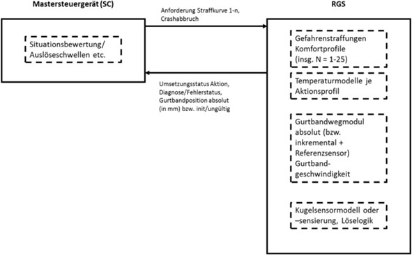
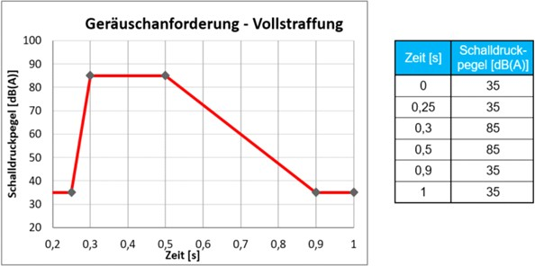
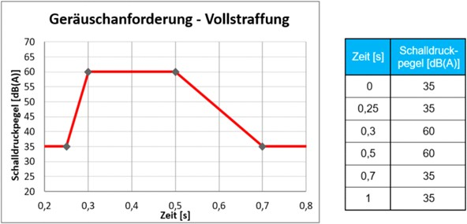
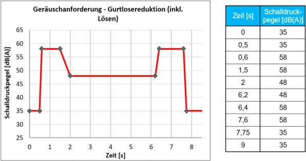
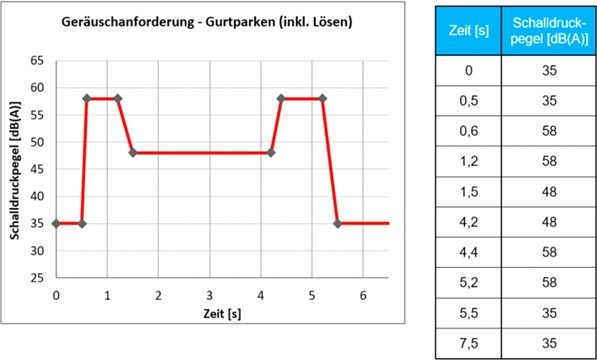
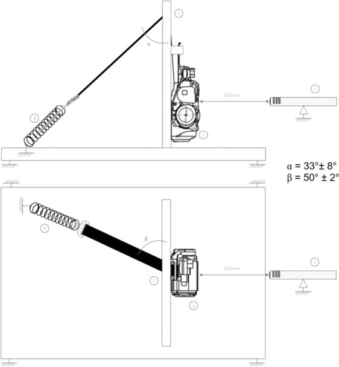

Version:
[redacted-person]: Komponenten
INTERNAL
© [redacted]
[redacted-person] an diesem Dokument verbleiben bei [redacted-co]. Vervielfältigung oder Bekanntgabe an Dritte ist nur mit schriftlicher Genehmigung von [redacted-co] zulässig. [redacted-person] oder Auslassungen sowie für dadurch eventuell entstehende Schäden wird von [redacted-co] keine Haftung übernommen.
Inhaltsverzeichnis
|
|---|
|
|
|
|
|
|
Abstimmung
Information : 3461471
Änderungsdokumentation
Information : 3461473
|
|
|
|---|
|
|
|
|---|
|
|
|
|---|---|---|
| [redacted-person] |
|
[redacted-person] |
| [redacted-person] |
|
[redacted-person] |
| [redacted-person] |
|
[redacted-person] |
| [redacted-person] |
|
[redacted-person] |
Information : 3461475
Das vorliegende Bauteil-Lastenheft (BT-LAH) ist angelehnt an die Struktur des VDA-
[redacted-person] 2 (www.vda-qmc.de) und beschreibt komponentenspezifische Anforderungen. Das VDA-Modul 1 wird durch die [redacted-co]99000 abgebildet und beschreibt komponentenübergreifende allgemeine Anforderungen zur Leistungsbringung im Rahmen der Bauteilentwicklung.
Information : 3461477
Die vom Auftragnehmer zu erfüllenden Anforderungen sind in der Identifikationsnummer (z. B: [A: BT- LAH-1]) grundsätzlich durch ein "A" gekennzeichnet. Textteile, die durch ein "I" gekennzeichnet sind, sind Informationen zum besseren Verständnis des BT-LAH. Gibt es keine Identifikationsnummer oder keine Kennzeichnung mit "A" bzw. "I", so handelt es sich ebenfalls um eine Anforderung.
Information : 3461479
[redacted-person] ist zu befolgen.
Nicht-funktionale Anforderung : 3461480
Dieses BT-LAH beschreibt Leistungen, Anforderungen, Prüf- und Erprobungsbedingungen, die das zu entwickelnde Produkt und der Auftragnehmer erfüllen müssen.
Information : 3461574
Das vorliegende Bauteil-Lastenheft und die Norm [redacted-co]99000 inkl. Teil 1 bis Teil 4 sind zusammen Grundlage des zu erbringenden Leistungsumfangs des Auftragnehmers.
Es gelten die Bauteilanforderungen an das Gurtsystem des LAH.DUM.857.D.
Information : 3461573
Nicht-funktionale Anforderung : 3461575
[redacted-person] umfasst Steuergeräte und Steuergerätesoftware oder Software für Steuergeräte, die in Fahrzeuge der [redacted-person] Elektrik ([redacted-prj]) zum Einsatz kommen werden.
Information : 3461576
Im Rahmen der Homologation von Fahrzeugen gewinnt Software zunehmend an Bedeutung. Gesetzeskonforme, den Anforderungen aus den Einsatzmärkten entsprechende Software steht insbesondere in den Zukunftsprojekten der [redacted-prj] im Fokus. Daher gehen wir davon aus, dass es auch [redacted-person] an einem mangelfreien Angebots-/Lieferumfang entspricht, dass im Falle einer [redacted]Leistungen diesen Anforderungen entsprechen. Im weiteren Verlauf der Anfrage und –soweit [redacted-person] mit Leistungen beauftragt wird –werden wir mit Ihnen gemeinsam unsere Detailanforderungen an die Dokumentation und Information rund um die Thematik gesetzeskonforme Software u.[redacted-person] Rahmen der Homologation unserer Fahrzeuge besprechen und vereinbaren.
Information : 3461577
[redacted-person] muss identisch mit dem Serienunterlieferant sein für alle in der Serien eingesetzten Unterbauteile. Somit darf es zwischen DV und PV keinen Unterlieferantenwechsel bei dem nominierten Produkt geben.
Nicht-funktionale Anforderung : 3461578
Zudem ist die Entwicklung des Grundmoduls zur Angebotsfreigabe abgeschlossen.
Nicht-funktionale Anforderung : 3461579
[redacted-person] der Entwicklung der RGS-Elektronik sowie ein detaillierter Entwicklungsplan sind dem Auftraggeber zur Angebotsfreigabe offenzulegen.
Nicht-funktionale Anforderung : 3461580
[redacted-person] sind vor der Angebotsfreigabe umzusetzen, sodass sich der DV-Stand technisch nicht vom PV-Stand oder dem Serienstand unterscheidet.
Nicht-funktionale Anforderung : 3461581
Ausgenommen hierbei sind Änderungen, die aufgrund technischer Herausforderungen im Projekt auftreten und nicht planbar zur Angebotsfreigabe sind.
Nicht-funktionale Anforderung : 3461582
Eine grobe Planung der durchzuführenden Prüfungen muss hinsichtlich Verfügbarkeit der Prüfeinrichtungen zur Angebotsfreigabe verfügbar sein.
Nicht-funktionale Anforderung : 3461583
[redacted-person] von Musteranfragen der Konzernmarken wird ein Abarbeitungsplan erstellt und mit dem Konzern abgestimmt.
Nicht-funktionale Anforderung : 3461584
Für die Fertigstellung von Standardmustern aus dem bestehenden Komponentenportfolio wird als Ziel eine Bearbeitungszeit von 15 Arbeitstagen ab Bestellzeitpunkt vereinbart, 20 Arbeitstage dürfen nicht überschritten werden.
Nicht-funktionale Anforderung : 3461585
Wenn durch Verschulden des Lieferanten ein Terminverzug entsteht, werden alle dadurch entstehenden Folgekosten beim OEM (Verschiebung/ Ausfall von Versuchen, Zusatzversuche, administrativer Aufwand usw.) dem Lieferanten in Rechnung gestellt und durch den Lieferanten beglichen.
Nicht-funktionale Anforderung : 3461586
Das vorliegende Modullastenheft beschreibt die Anforderungen an die Entwicklung eines reversiblen Gurtstraffers (RGS).
Information : 3461589
Dieser kann vor einer drohenden Fahrzeugkollision – unabhängig von der pyrotechnischen Strafffunktion – den Sicherheitsgurt des Insassen durch einen elektromotorischen Antrieb straffen und diese Gurtvorspannung ggf. wieder lösen.
Information : 3461591
[redacted-person] des Systems erfolgt von einem externen Steuergerät, welches durch die Bewertung verschiedener Fahrzeugkenndaten ein bevorstehendes Kollisionsrisiko prognostiziert. [redacted-person] ist nicht Umfang dieses Lastenheftes
Information : 3461592
Der reversible Gurtstraffer soll die Insassen vor einer bevorstehenden Fahrzeugkollision konditionieren, indem er die Gurttragelose mittels elektromotorischer Straffung des Gurtbandes reduziert und somit den Insassen im Sitz stabilisiert.
Information : 3461596
Hierdurch soll die Verlagerung des Insassen bei kritischen Fahrzuständen (z.[redacted-person], Schleudern etc.) reduziert werden.
Bezeichnung des Zielfahrzeuges: siehe Lieferumfangslastenheft.
Entwicklungsauftragsnummer: siehe Lieferumfangslastenheft.
Zielmarkt: projektspezifisch siehe Lieferumfangslastenheft.
Die relevanten Gesetzesanforderungen der Zielmärkte sind zu erfüllen.
Information : 3461597
[redacted-person] : 3462010
[redacted-person] : 3462011
[redacted-person] : 3462013
Target: siehe Lieferumfangslastenheft
Nicht-funktionale Anforderung : 3462014
[redacted-person] : 3462016
Es gelten die Anforderungen des Kapitels "Entwicklungs- und Lieferumfang" der [redacted-co]99000.
Nicht-funktionale Anforderung : 3461605
[redacted-person] verpflichtet sich bei der Integration des Bauteiles beim Auftraggeber mitzuwirken.
Nicht-funktionale Anforderung : 3461606
Im Rahmen der Forward-[redacted-person] wird über das Neuteilinformationsblatt die KV-Quote vorgegeben, welche im Rahmen der Vergabeverhandlungen vereinbart wird.
(Gilt nicht für [redacted-co].)
Für [redacted-co] gilt:
Information : 3461607
Es gelten die Anforderungen der Konzeptverantwortungsvereinbarung. Für das / die Bauteil(e) gilt folgende Konzept-Verantwortungs-Quote: 90%
[redacted-person] : 3461608
[redacted-person] verpflichtet sich, alle Anforderungen dem Angebot als vereinbarte Beschaffenheit zugrunde zu legen. Abweichungen vom BT-LAH sind dem Angebot beizufügen und zu dokumentieren.
[redacted-person] : 3461610
[redacted-person] eines Auftragnehmers muss dieser nach den konzernweit abgestimmten Bewertungskriterien des Auftraggebers (bauteilbezogene Beurteilung von Entwicklungspartnern) auditiert und zugelassen sein.
Information : 3461611
Mit dem Angebot sind vom Auftragnehmer folgende Unterlagen den technischen oder zuständigen Fachabteilungen des Auftraggebers zur Prüfung vorzulegen:
[redacted-person] : 3461612
Liste der offenen Punkte und Abweichungen vom BT-LAH (analog zur Struktur des BT-LAH)
[redacted-person] : 3462024
Pflichtenheft
Erfahrungsnachweis aus ähnlichen Projekten
[redacted-person] : 3462025
[redacted-person] : 3462026
Nachweis über ausreichende Entwicklungskompetenz bzw. Entwicklungskapazitäten
[redacted-person] : 3462027
Nachweis über die geforderte Ausrüstung im Versuch, Labor, CAD-Bereich
[redacted-person] : 3462028
Erfahrungsnachweis im Prototypenbau (insbesondere bei sicherheitskritischen Bauteilen)
[redacted-person] : 3462029
[redacted-person], die auch Engpässe bei anderen Aufträgen des Auftragnehmers berücksichtigt
Projektstrukturplan gemäß [redacted-co]99000
Projektterminplan gemäß [redacted-co]99000
Montage- und Befestigungskonzept
Angaben zu Eigen- und Fremdanteil (Entwicklung, Produktion)
Erprobungsplan/Testmanagement
[redacted-person] : 3462030
[redacted-person] : 3462031
[redacted-person] : 3462032
[redacted-person] : 3462033
[redacted-person] : 3462034
[redacted-person] : 3462035
Werkstoffkonzept aller Einzelbauteile (nur Werkstoffe, keine Reinstoffangaben erforderlich)
[redacted-person] : 3462036
[redacted-person] durchzuführende Simulationen
[redacted-person] : 3462037
Für [redacted-co] gilt:
Es ist der Nachweis zu erbringen, dass das in Kapitel "2.9 Anforderungen an Kenntnisse im Produktdaten- Management" geforderte Anforderungsprofil bereits erfüllt ist oder zum Zeitpunkt der Beauftragung erfüllt sein wird, z. [redacted-person] entsprechende Qualifizierungsnachweise.
[redacted-person] : 3461613
Der aktuelle Terminplan wird von der Beschaffung des Auftraggebers den Anfrageunterlagen beigefügt.
Information : 3462040
Folgende vom Auftraggeber vorgegebenen Termine sind vom Auftragnehmer nach [redacted-co]99000 im Projektterminplan zu berücksichtigen.
KW x : Verfügbarkeit A-Muster
KW x : 3D-CAD-Datensatz
KW x : [redacted-person]
KW x : DDKM ([redacted-person]-Kontroll-Modell)
KW x : Verfügbarkeit B-Muster
KW x : Verfügbarkeit C-Muster
KW x : Erstmuster
KW x : Erstmuster-Prüfbericht
KW x : Typprüfungsunterlagen (z. [redacted-person]'s, CCC,...)
KW x : Baumustergenehmigung
KW x : P-Freigabetermin
KW x : B-Freigabetermin
KW x : 2-Tagesproduktion
KW x : SOP
Für definierte Terminen: siehe Lieferumfangslastenheft.
[redacted-person] : 3462041
[redacted-person] : 3462639
[redacted-person] : 3462640
[redacted-person] : 3462641
[redacted-person] : 3462642
[redacted-person] : 3462643
[redacted-person] : 3462644
[redacted-person] : 3462645
[redacted-person] : 3462646
[redacted-person] : 3462647
[redacted-person] : 3462648
[redacted-person] : 3462649
[redacted-person] : 3462650
[redacted-person] : 3462651
[redacted-person] : 3462652
Nicht-funktionale Anforderung : 3462042
Für allgemein bauartgenehmigungspflichtige Bauteile (ABG's) sind vom [redacted-person] inkl. Testreport (z. [redacted-person] ECE, CCC, Taiwan) an den jeweiligen
bauteileverantwortlichen Konstrukteur zu liefern, der es an die Typprüfabteilung der Marke (siehe auch [redacted-co]01155) weiterleitet.
KW x: Vorlage der ABG für ECE
KW x: Vorlage der ABG für Taiwan
KW x: Vorlage der ABG-Antragsnummer für China (CCC)
KW x: Vorlage der ABG für China (CCC)
KW x: Vorlage der ABG für Indien
KW x: Vorlage der ABG für Brasilien
KW x: Vorlage der ABG für Japan
[redacted-person] : 3462043
[redacted-person] : 3462655
[redacted-person] : 3462656
[redacted-person] : 3462657
[redacted-person] : 3462658
[redacted-person] : 3462659
[redacted-person] : 3462660
[redacted-person] : 3462661
[redacted-person] der Terminpläne des Einkaufs sind Terminpläne für die Bauteilentwicklung zu erstellen, die folgende Kerntermine berücksichtigen:
Nicht-funktionale Anforderung : 3462044
Für die Baustufen müssen funktionsgerechte Teile vorliegen mit Nachweis der Anbindungsmaße und Auslieferprüfungen für Grundfunktionen.
VFF erste Teile aus Serienwerkzeugen
1 Jahr vor SOP/Teile für Freibewitterung
Nicht-funktionale Anforderung : 3462663
Nicht-funktionale Anforderung : 3462664
Nicht-funktionale Anforderung : 3462665
Zur PVS werkzeugfallende- und grundvermessene Teile aus Serienwerkzeugen in freigegebenen Serienwerkstoffen. Für PAG gilt die [redacted-person] 3 zur PVS.
Nicht-funktionale Anforderung : 3462666
16 Wochen vor 0-Serie müssen die Bauteile mit Note 3 und Erstmusterprüfbericht für die BMG- Prüfungen vorliegen ([redacted-person] sind für die Prüfung 12 Wochen vorgesehen)
Nicht-funktionale Anforderung : 3462667
4 Wochen vor der 0-Serie müssen alle für die Baumustergenehmigung erforderlichen Prüfungen abgeschlossen sein und die BMG vorliegen
Für [redacted-co] gilt: Für [redacted-co] gilt:
Nicht-funktionale Anforderung : 3462668
Nicht-funktionale Anforderung : 3462045
4 Wochen vor der PVS müssen alle für die Baumustergenehmigung erforderlichen Prüfungen abgeschlossen sein und die Baumustergenehmigungsempfehlung vorliegen ([redacted-person] sind für die Prüfung 12 Wochen vorgesehen)
Nicht-funktionale Anforderung : 3462670
6 Wochen vor 0-Serie muss der Erstmusterprüfbericht mit mind. Note 3 vorliegen
Nicht-funktionale Anforderung : 3462671
[redacted-person] liefert im Rahmen der Fortschrittsberichte die erforderlichen Daten für folgende Metriken:
Meilensteintrendanalyse basierend auf den vereinbarten Meilensteinen
[redacted-person] : 3462047
[redacted-person] : 3462673
Vergleich der geplanten und der tatsächlichen Dauer der Aktivitäten und Arbeitspakete basierend auf dem Projektterminplan
Fehlerverfolgung inkl. Priorisierung und Bearbeitungsstatus
[redacted-person] : 3462674
[redacted-person] : 3462675
Weitere projektspezifische technische Metriken, die kritische Aspekte messen, werden zwischen den Projektverantwortlichen des Auftragnehmers und des Auftraggebers abgestimmt.
[redacted-person] : 3462048
[redacted-person] des jeweiligen Fahrzeugprojekts.
Nicht-funktionale Anforderung : 3462050
Zur B-Freigabe sind dem Auftraggeber zwei komplette Sätze des Gurtsystems inkl. aller benötigten Gurt- Komponenten in inerter Ausführung zu Verfügung zu stellen.
x - Teile für Funktionsprüfungen
Nicht-funktionale Anforderung : 3462051
[redacted-person] : 3462679
x - Teile für Gesamtintegrationstest (inklusive der Teile für Verbauvorschrift, HILs, Referenzfahrzeug und weitere Prüforte)
x - Teile für Einbauuntersuchungen
x - Teile für Kundendienstlösungen
[redacted-person] : 3462680
[redacted-person] : 3462681
[redacted-person] : 3462682
x - Teile für Erprobungen (z. [redacted-person], Korrosion, Festigkeit, Akustik)
[redacted-person] : 3462683
x - Teile für Fahrversuch
x - Teile für Dauererprobungen
x - Teile für Fahrzeugdauerlauf
x - Teile für Laboranalyse
x - Teile für Vorbau/Vorderwagen
x - Teile für Unterflurmodelle
[redacted-person] : 3462684
[redacted-person] : 3462685
[redacted-person] : 3462686
[redacted-person] : 3462687
[redacted-person] : 3462688
[redacted-person] : 3462689
x - Teile für [redacted-person]-Matrix-Code (die Lesbarkeit und der Inhalt des Codes müssen verifiziert werden; die Musterteile sind der Qualitätssicherung des Auftraggebers kostenlos zur Verfügung zu stellen.)
[redacted-person] : 3462690
[redacted-person] von Mustern sind die Musterstände für ZSB bzw. Systeme, Einzelteile, Komponenten mit dem Auftraggeber abzustimmen.
[redacted-person] : 3462052
[redacted-person] muss mit dem aktuellen Stand (HW, SW, EEPROM, Mechanik) gekennzeichnet werden.
[redacted-person] : 3462053
Zusätzlich sind alle auszuliefernden Musterteile mit einer fortlaufenden Nummer zu versehen und dokumentieren, um während der Entwicklungsphase die Rückverfolgbarkeit von Teileständen, Herstellungsdatum, Monteur etc. zu gewährleisten.
Nicht-funktionale Anforderung : 3462055
Bei der Lieferung von Musterteilen mit inerten, pyrotechnischen Komponenten sind die Vorgaben zur Bauteilkennzeichnung gemäß Produkt-Prozessstandard PP_Fzg_5_Inerte Airbag und Gurtstraffeinheiten verbauen einzuhalten.
Nicht-funktionale Anforderung : 3462057
[redacted-person] von 3D-CAD-Daten (digitaler Prototyp) hat zu einem definierten Zeitpunkt vor Lieferung der Musterteile zu erfolgen.
[redacted-person] : 3462058
Mindestens für alle geplanten Baustufen und Erprobungsfahrzeuge ist jeweils ein [redacted-person] anzuliefern.
[redacted-person] : 3462059
[redacted-person] über Fahrzeug-Anzahl und Aufbautermin (virtuell und physisch) sind unter Abschnitt "Terminplan und Meilensteine" festgelegt bzw. dem Prototypenbauplan zu entnehmen.
Information : 3462060
Über die Projektlaufzeit sind Zusammenbauten für Sondererprobungen der [redacted-person] kostenfrei zur Verfügung zu stellen nach Spezifikationen in den jeweiligen Projektlastenheften.
Liefertermine und genaue Ausführungen der Teile werden gemeinsam mit der Fachabteilung festgelegt.
Nicht-funktionale Anforderung : 3462061
Zu berücksichtigen sind auch Musterteile für Vorbau/Vorderwagen und Unterflurmodelle, falls packagerelevante Änderungen (laut [redacted-co]99000 Kapitel "Änderungsmanagement") an dort verbauten Bauteilen vorgenommen werden.
[redacted-person] : 3462062
[redacted-person] können sein:
Geometrieänderungen
Schlauchmarkierungen
Wechsel des Werkzeugentwicklungsstandes (Prototypen-Werkzeug, Serien-Werkzeug)
Information : 3462063
Die genannte Anzahl an Teilen ist Bestandteil des Entwicklungsumfanges und der Entwicklungskosten. Musterteile sind dem Auftraggeber frei Haus anzuliefern.
[redacted-person] : 3462064
Für die Bauteile ist eine Kennzeichnung mit einem RFID-Transponder nach [redacted-co]01067 „Einsatz von Auto- ID zur eindeutigen Objektkennzeichnung“ gefordert.
[redacted-person] : 3462065
[redacted-person] übernimmt das Beschaffen, Beschreiben und Montieren der Transponder, sowie die elektronische Bereitstellung des geforderten Dokumentationsumfangs.
[redacted-person] : 3462066
[redacted-person] muss Fahrzeugteile und [redacted-person] (z. [redacted-person], After-[redacted-person]), welche nach weltweiten Gesetzen, z. [redacted-person], EG , Inmetro (Brasilien) und CCC ([redacted-person] Certification), eine Bauartgenehmigung und/oder einen Konformitätsnachweis (für funkbasierte Systeme) benötigen, zertifizieren und mit der entsprechenden Identifizierung nach Gesetzesvorgabe kennzeichnen.
[redacted-person] : 3462068
Für kennzeichnungs- und bauartgenehmigungspflichtige Märkte erfolgt die Zertifizierung und Kennzeichnung unter Verwendung eines Typisierungsnamens. Die gesetzlichen Anforderungen für den [redacted-person] (CNCA-C11-01:2014) sind in der Konzernnorm VW10511 beschrieben. Falls eine Nennung des Bauteilverwendungsbereichs („Typabgrenzung“) in den Bauartgenehmigungsdokumenten erforderlich ist, erfolgt diese ausschließlich durch den „[redacted-person]“ und/oder die verkürzte Konzernprojektbezeichnung.
[redacted-person] : 3462069
[redacted-person] muss die Zertifikate vor Ablauf ihrer jeweiligen Gültigkeit sowie bei Gesetzesänderungen aktualisieren und rechtzeitig unaufgefordert an den Auftraggeber liefern. Dies gilt über den gesamten Produktlebenszyklus, der auch den Zeitraum der Versorgungs-verpflichtung von [redacted-person] beinhaltet.
[redacted-person] ist typprüfpflichtig: Ja
[redacted-person] : 3462070
[redacted-person] : 3462071
Bei typprüfpflichtigen Bauteilen sind zum Erfüllungsnachweis der gesetzlichen [redacted-person] in Absprache mit der zuständigen Typprüfabteilung des Auftraggebers ggf. in Anwesenheit des [redacted-person] bzw. der Behörde durchzuführen und zu dokumentieren.
[redacted-person] : 3462072
[redacted-person] Sicherheitsgurte gemeinsam mit der Sicherheitsgurt-Höhenverstellung und den Gurtschlössern muss für die jeweiligen Zielmärkte beim Hersteller des Sicherheitsgurtes erfolgen.
Nicht-funktionale Anforderung : 3462073
Die CE-Zulassungsnummer für den Gasgenerator der Gurtkomponente muss von Lieferanten spätestens zur B-Freigabe an die Fachabteilung übermittelt werden.
Nicht-funktionale Anforderung : 3462074
[redacted-person] nach ECE-R16 muss vom Lieferanten 10 Wochen vor der PVS an die Fachabteilung der [redacted-person] sowie der Typprüfung übermittelt werden.
Nicht-funktionale Anforderung : 3462075
[redacted-person] ist selbstzertifizierungsrelevant: Ja
[redacted-person] : 3462076
Für selbstzertifizierungsrelevante Teile muss eine gesetzeskonforme Dokumentation der geforderten meist experimentellen Nachweise der Gesetzeserfüllung durchgeführt werden.
[redacted-person] : 3462077
[redacted-person] ist ERC-pflichtig: Nein
[redacted-person] : 13851127
[redacted-person] muss Fahrzeugteile, welche nach den südkoreanischen gesetzlichen Vorgaben ERC- pflichtig sind, mit einem [redacted-person] Code (DMC) nach der Konzernnorm VW01064 versehen.
[redacted-person] : 13851156
[redacted-person] der [redacted-person] Code-Beschriftung muss nach VW01064 für Teileverbauprüfung (TVP) und Bauzustandsdokumentation (BZD) umgesetzt werden.
[redacted-person] : 13851698
[redacted-person] ist ein Zusammenbau und enthält als Unterkomponente ein ERC-pflichtiges
Bauteil: Nein
[redacted-person] : 13851855
Für ERC-pflichtige Bauteile im Zusammenbau (ZSB) hat der Auftragnehmer eine Teileverbauprüfung und Bauzustandsdokumentation nach VW01064 für jede einzelne ERC-pflichtige Komponente durchzuführen.
[redacted-person] : 13851869
[redacted-person] als Ganzes muss ebenfalls einen [redacted-person] Code nach VW01064 erhalten, über welchen die Teileverbauprüfung und Bauzustandsdokumentations-Daten der Unterkomponenten zurückverfolgt werden können.
[redacted-person] : 13851880
[redacted-person] sind diese Daten dem Auftraggeber zur Verfügung zu stellen.
[redacted-person] : 13851900
Es gelten die Anforderungen und Verfahren bezüglich Qualität der Formel-Q-Reihe und der [redacted-co]99000.
[redacted-person] : 3461620
Es gelten die Formel-Q Dokumente mit ihren Unterdokumenten. [redacted-person] muss sich der Auftragnehmer mit dem zuständigen QS-BTV oder QS-Produkttechniker abstimmen.
[redacted-person] : 3462080
[redacted-person]: 0 Liegenbleiber (LB) und 0 Schadensfälle (SF) sowie 0-km-Ausfälle mit 0 ppm
[redacted-person] : 3462081
Für [redacted-co] gilt:
Es gelten die Anforderungen des Qualitätslastenheftes [redacted-co] (LAH [redacted-phone]).
[redacted-person] : 3462082
Für [redacted-co] gilt:
[redacted-person] und Planung muss vom Auftraggeber vorgegebene Prüftechnologien und -Konzepte berücksichtigen.
[redacted-person] : 3462083
[redacted-person] des Bauteils ist mit einer Design-Validierung am B-Musterstand und einer Produkt- Validierung am C-Musterstand nachzuweisen.
[redacted-person] : 3462084
Es ist über eine 2-Tages-Produktion gemäß den Regelungen der Formel Q-Konkret die Stabilität der Qualität unter Serienbedingungen nachzuweisen.
[redacted-person] : 3462085
[redacted-person] sind Fähigkeitsnachweise aller gesetzesrelevanten Grenzwerte zu liefern.
Nicht-funktionale Anforderung : 3462086
[redacted-person] der FMEA sind vom Auftragnehmer zu der P-Freigabe vorzustellen.
Nicht-funktionale Anforderung : 3462088
[redacted-person]
Nicht-funktionale Anforderung : 3461624
Abweichend dazu ist im Projekt [redacted-prj] die mitgeltende Unterlage „Rahmenbedingungen PDM für [redacted-prj]“
dringend zu beachten.
Nicht-funktionale Anforderung : 3461625
Für [redacted-co] gilt:
Zur prozesssicheren Einsteuerung von Entwicklungsergebnissen in die Systeme des Auftraggebers sind Grundkenntnisse über das Produktdaten-Management ([redacted]) unerlässlich.
Für [redacted-co] gilt:
Information : 3461627
[redacted-person] des LAH.[redacted-phone]AF „Anforderungsprofil für die Beauftragung von technischen Regeln
zur Aufnahme im System MBT“ sind zu erfüllen.
[redacted-person] : 3461628
[redacted-person] stellt ständige Applikationsingenieure nur für das beschriebene Einzelprojekt im eigenen Hause, sowie Residentingenieure am jeweiligen Entwicklungsstandort beim Auftraggeber.
[redacted-person] : 3461630
Sowohl für die Applikations- als auch die Residentingenieure sind durch den Auftragnehmer die notwendigen Mess- und Applikationssysteme zu stellen.
[redacted-person] : 3461631
[redacted-person] sollen in Absprache mit dem Auftraggeber an den Erprobungsfahrten des Auftraggebers teilnehmen.
[redacted-person] : 3461632
Die gesamte Dokumentation ist vom Auftragnehmer in deutscher Sprache auf muttersprachlichem Niveau (korrekte Rechtschreibung, Grammatik und Verständlichkeit) zu erstellen.
Eine englische Version der Dokumentation ist je nach Konzern-Marke zulässig.
[redacted-person] : 3461634
[redacted-person] von im internet verfügbaren maschinellen Übersetzungsdienste ist aus Gründen der Geheimhaltung, des Datenschutzes und Schutz des geistigen Eigentums untersagt.
[redacted-person] : 3461635
Die jeweils aktuelle Dokumentation des Entwicklungsstandes ist nach vorheriger Absprache mindestens alle 4 Wochen dem Auftraggeber auszuhändigen.
[redacted-person] : 3461636
[redacted-person] ist dem Auftraggeber in folgendem Dateiformat auszuhändigen:
DOORS
[redacted-person]
[redacted-person]
[redacted-person] : 3461637
Für alle Applikationsprojekte ist eine detaillierte Dokumentation anzufertigen, welche Bauteile aus der Grundentwicklung übernommen werden und welche Bauteile spezifisch für diese Applikation sind.
Nicht-funktionale Anforderung : 3461638
Zu jeder Lieferung eines neuen Standes des Bauteiles (Hardware, Software und Mechanik) muss den zuständigen Fachabteilungen des Auftraggebers eine Mustermappe in einem vom Auftraggeber vorgegebenen FOrmat und Übertragungsweg übergeben werden.
[redacted-person] : 3462102
Mit mindestens folgenden Inhalten:
Deckblatt mit folgendem Inhalt: Deckblatt mit folgendem Inhalt: [redacted-person], Teilebezeichnung, [redacted]Mechanik-Stand (z. [redacted-person]), Projektleitername des Auftragnehmers, Unterlageninhaltsverzeichnis, Stand des Lastenheftes, Stand des Pflichtenheftes
Kurzbeschreibung bzw. Informationen mit folgenden Angaben:
[redacted-person] : 3462103
alle Änderungen gegenüber vorherigem Stand, die Notwendigkeit der Änderung, die Auswirkung der Änderung
[redacted-person] : 3462724
Teilelebenslauf, Pflichtenheft, Mess- und Prüfberichte (inkl. Toleranzanalyse, Simulationsergebnis, Prüfbericht über Werkstoffanforderungen, Herstellungsverfahren)
[redacted-person] : 3462725
[redacted-person] der Mustermappe ist in Form einer ausgefüllten Checkliste nachzuweisen.
[redacted-person] : 3462104
[redacted-person] sind innerhalb von 5 Arbeitstagen nach zu reichen.
[redacted-person] : 3462105
[redacted-person].
Es gelten die "Rahmenbedingungen PDM für [redacted-prj]"
Für [redacted-co] gilt:
Nicht-funktionale Anforderung : 3462107
Es gelten die Anforderungen der Querschnittslastenhefte "TE DMU" LAH DUM 000 A und "TE CATIA V5" LAH DUM 000.
Bei einem Intern verwendungsbeschränkten Bauteil:
Nicht-funktionale Anforderung : 3462108
Intern verwendungsbeschränkte Bauteile ent-halten Know-How des Auftraggebers. [redacted-person] zu intern verwendungsbeschränkten Bauteilen sind ausschließlich zur Verwendung durch den Auftragnehmer an dessen Entwicklungsstandort bestimmt. [redacted-person] von Daten an andere Standorte des Auftragnehmers kann nur nach vorheriger schriftlicher Zustimmung durch den Auftraggeber erfolgen und ist auf solche Daten zu beschränken, die für die reine Fertigung notwendig sind. Im Falle von Zuwiderhandlungen erhebt der Auftraggeber eine Vertragsstrafe in Höhe von EUR 50.000,--. [redacted-person] wird auf eine eventuelle Schadenersatzverpflichtung angerechnet.
Sollte ein Datenaustausch mit anderen Standorten notwendig werden, hat der Auftragnehmer einen Ansprechpartner zu benennen, der einen Datenaustausch mit dem Bauteilverantwortlichen des Auftraggebers abstimmt.
[redacted-person] : 3462109
Nicht-funktionale Anforderung : 3462110
[redacted-person] an andere Standorte des Auftragnehmers weitergegeben werden müssen, muss der Auftragnehmer zuvor die schriftliche Zustimmung des Auftraggebers einholen.
Nicht-funktionale Anforderung : 3462111
[redacted-person] muss die Weitergabe der Daten an andere Standorte auf solche Daten beschränken welche für die reine Fertigung notwendig sind
Nicht-funktionale Anforderung : 3462112
Im Falle von Zuwiderhandlungen erhebt der Auftraggeber eine Vertragsstrafe in Höhe von EUR 50.000,--. [redacted-person] wird auf eine eventuelle Schadenersatzverpflichtung angerechnet.
Nicht-funktionale Anforderung : 3462113
Nicht-funktionale Anforderung : 3462114
Der elektromotorische, reversible Gurtstraffer stellt eine Erweiterung des Funktionsumfangs des pyrotechnischen, irreversiblen Gurtstraffers dar und darf diesen in seiner Funktion nicht beeinflussen.
[redacted-person] : 3461642
Alle möglichen Zustandsübergänge in die Crashphase (ohne Vorstraffung, mit abgeschlossener Vorstraffung, Übergang während Straffung…) müssen robust ohne Beeinflussung von Pyrotechnikstraffung oder Kraftbegrenzung sowie ungewolltes RGS-Aufkuppeln sichergestellt werden.
[redacted-person] : 3461643
[redacted-person] der elektromechanischen Baugruppe erfolgt vom Master-Steuergerät über eine Schnittstelle, die projektspezifisch (siehe Lieferumfangslastenheft) ist und im elektronischen Lastenheft definiert wird.
Information : 3461644
[redacted-person] des erforderlichen Leistungsstromes sowie der Straff- und Lösekurve erfolgt in der Steuereinheit des Aufrollermoduls.
Information : 3461645
[redacted-person]-Steuergerät diagnostiziert über diese Schnittstelle die Funktionsbereitschaft des reversiblen Gurtstraffers.
[redacted-person] fordert Fahrzeugseitig die jeweiligen Funktionsanteile an. (Anforderungszeitpunkt und Zeitraum, über den die Anforderung besteht).
[redacted-person] gilt:
Information : 3461646
Information : 3461647
[redacted-person] fordert die jeweiligen Funktionsanteile so lange an, wie sie benötigt werden.
Information : 3461648
[redacted-person] gilt:
[redacted-person] fordert die jeweiligen Funktionsanteile einmalig an. Die darauffolgende Durchführung obliegt dem reversiblen Gurtstraffer.
Information : 3461649
[redacted-person] der Anforderung bzw. Ende der Komfortstraffung liegt es in der Verantwortung des Lieferanten des Gurtstraffers, eine umgehende Freigängigkeit des Gurtbandes herzustellen (Lösen).
[redacted-person] : 3461650
[redacted-person] wird ein Zustandssignal „Fahrzustand stabil/instabil“ zur Verfügung gestellt, das den resultierenden Beschleunigungszustand des Fahrzeugs widerspiegelt und vom RGS in die Löseentscheidung einbezogen wird.
[redacted-person] : 3461651
Es sind entsprechende Funktionsmodule oder Überwachungen vorzusehen, um in allen möglichen Fahrsituationen ein sicheres Lösen zu gewährleisten und eine Interaktion mit der mechanischen Sperrverriegelung zu verhindern.
[redacted-person] : 3461652
Das genutzte Funktionskonzept muss dem Auftraggeber offengelegt werden (white-box).
Nicht-funktionale Anforderung : 3461653
Es ist sicherzustellen, dass zwischen Ende der Anforderung und Beginn des Lösens kein Gurtbandauszug stattfindet zur Verhinderung einer ungewollten Verriegelung des Gurtes.
Abbildung 4.1: Systemumgebung RGS, Master-Steuergerät
[redacted-person] : 3461654

[redacted-person] wird über zwei Befestigungspunkte starr mit der Karosserie verbunden.
Information : 3461655
[redacted-person] : 3461657
Um zu umliegenden Bauteilen (Kunststoffverkleidungen, Verkabelungen etc.) einen konstruktiv erforderlichen Mindestabstand einzuhalten, darf das Aufrollermodul den unter Punkt 5.11.3 beschriebenen Bauraum an keiner Stelle durchdringen.
Abbildung 4.3: Systemschaltbild
[redacted-person] : 3461658
Kapitel für mechanische Baugruppen nicht belegt.
Benennung: [redacted-person] (RGS)
Information : 3461660
Information : 3461661
Modulkennzeichnung:
KCC 20 (RGS mit schaltbarem Gurtkraftbegrenzer) KCC 25 (RGS mit konstantem Gurtkraftbegrenzer)
[redacted-person] : 3461663
Nicht-funktionale Anforderung : 3461664
Die später verwendete Benennung „Steuergerät“ beschreibt das Steuergerät des RGS.
Teilenummer: siehe Lieferumfangslastenheft
Information : 3461665
[redacted-person] : 3461666
[redacted-person] müssen alle im LAH genannten Spezifikationen (siehe auch Prüfmatrix im Anhang) erfüllen.
[redacted-person] : 3462140
Für alle Applikationsprojekte ist eine fahrzeugspezifische Deltaqualifikation vorzusehen und die Inhalte auf Basis der COP-Struktur mit dem jeweiligen Kunden abzustimmen.
Nicht-funktionale Anforderung : 3462141
[redacted-person] sind in den fahrzeugspezifischen Lastenheften definiert.
Nicht-funktionale Anforderung : 3462142
[redacted-person] und deren Interpretation sind schriftlich und in elektronischer Form anhand von Versuchsberichten mit Fotos zu dokumentieren und an die Fachabteilung zu übergeben.
Nicht-funktionale Anforderung : 3462143
[redacted-person] im Fahrzeug sind zu berücksichtigen.
Nicht-funktionale Anforderung : 3462144
Die im nachfolgenden Text aufgeführten Messstellen sind in der folgenden Prinzipdarstellung verdeutlicht.
Information : 3462145
Abbildung: [redacted-person]-Messstellen am Gurtsystem (gemäß ISO TS13499 – RED C: 2007 E, [redacted-phone])
Information : 3462739
Siehe §5.1.1.3 im Konzern-[redacted-person] (LAH.DUM.857.D)
Nicht-funktionale Anforderung : 3462147
[redacted-person]- und Prinzipschaltbild ist im Systemlastenheft RGS präziser definiert. Hier wird ein vereinfachtes Schaltbild dargestellt:
Abbildung: Prinzipschaltbild des RGS
Information : 3461670
Information : 3462149
Für das zugrunde liegende, pyrotechnische Gurtstraffermodul (KCC 2X) gelten die Anforderungen des Konzern-[redacted-person] LAH.DUM.857.D.
Nicht-funktionale Anforderung : 3462151
Darüber hinaus sind von der elektromotorischen Straffeinheit folgende Funktionen zu erfüllen:
[redacted-person] : 3462152
Vorspannen des Sicherheitsgurtes nach Anforderung vom Master-Steuergerät.
[redacted-person] : 3462744
[redacted-person] ist für 25 Kundenprofile auszulegen (Straff- und Löseprofile), bei denen Maximalkraft und Kraftanstiegsgradient für jedes Fahrzeugprojekt frei parametrierbar sind.
[redacted-person] : 3462745
Für jedes Profil ist eine Zielkraft sowie eine Geschwindigkeitsregelung bzw. Stromregelung vorzusehen (Zielkraft unabhängig von Einzugsgeschwindigkeit; siehe auch Elektronik-LAH).
[redacted-person] : 3462746
Die genaue Anzahl ist projektspezifisch und wird von der Fachabteilung zur B-Freigabe definiert.
Nicht-funktionale Anforderung : 3462747
[redacted-person] sind inhaltlich zu unterscheiden:
Tabelle: Profiltypen
[redacted-person] : 3462748
|
|
|---|
|
|
|---|---|
|
|
| [redacted-person] |
|
|
|
|
|
|
|
[redacted-person] des Systems darf konstruktiv nicht begrenzt sein.
[redacted-person] : 3463127
[redacted-person] : 3462749
[redacted-person] muss in der Lage sein, den maximal möglichen Gurtbandvorrat in der Anlageposition einzuziehen (ausreichende Maximalaktivierungszeit)
[redacted-person] : 3462750
[redacted-person] muss mechanisch oder durch ein geeignetes Stromprofil solange gehalten werden, wie die Anforderung vom Mastersteuergerät vorliegt.
[redacted-person] : 3462751
Während der Haltephase ist auf Hochreibwert (µhigh) mit maximalem Insassenperzentil kein Auszug von Gurtband zulässig in Abhängigkeit vom Straffprofil.
[redacted-person] : 3462752
[redacted-person] der Anforderung bzw, nach Beenden der Funktion führt der RGS einen Vorgang zum sicheren Lösen der Gurtvorspannung aus.
[redacted-person] : 3462753
Der RGS führt unter Einbeziehen des durch das Mastersteuergerät übermittelten Fahrzeugzustandes selbstständig ein sicheres Lösen der Gurtvorspannung zu einem passenden Zeitpunkt durch. Dazu bewertet er die Lösefähigkeit, um eine Blockade der Sperrklinken sicher zu vermeiden. Ggf. wird das Lösen somit bis zum Vorliegen der Lösefähigkeit verzögert. [redacted-person] sind dem Abschnitt 8.3.1.11 zu entnehmen.
[redacted-person] : 3462754
Ggf. wird das Lösen somit bis zum Vorliegen der Lösefähigkeit verzögert.
[redacted-person] : 3462755
In jedem Fall muss ein gerade ausgeführtes Profil durch die Anforderung eines Profils mit höherer Priorität umgehend abgebrochen und ohne Lösen bzw. Zeitverzug in die Ausführung des neu angeforderten Profils übergegangen werden.
[redacted-person] : 3462756
Im Falle einer pyrotechnischen Straffung empfängt der RGS das Signal, dass eine [redacted-person] erfolgt ist. In diesem Fall wird die Straffung umgehend abgebrochen (=Crashabschaltung).
[redacted-person] : 3462757
In jedem Fall muss ein gerade ausgeführtes Profil durch die Anforderung eines anderen Profils umgehend abgebrochen und ohne Lösen bzw. Zeitverzug in die Ausführung des neu angeforderten Profils übergegangen werden.
[redacted-person] : 3462758
Während der Ausführung eines Profils wird eine mögliche Anforderung eines Profils mit niedrigerer Priorität nicht umgesetzt.
[redacted-person] muss vom Steuergerät diagnostizierbar sein.
[redacted-person] : 3462759
[redacted-person] : 3462760
[redacted-person] zu Profile sind dem Anhang 9.1 zu entnehmen. Die genaue Ausprägung der Profile wird im Rahmen der Entwicklung abgestimmt.
Nicht-funktionale Anforderung : 3462761
[redacted-person] ist projektspezifisch und wird im Lieferumfangslastenheft definiert.
Nicht-funktionale Anforderung : 3462762
Die elektromotorische Antriebseinheit darf die Funktionen des Grundmoduls – z.[redacted-person] und Rückzugskräfte oder die pyrotechnische Aktivierung sowie Kraftbegrenzung/ Gurtkraftumschaltung im Crashverlauf – nicht beeinflussen.
[redacted-person] : 3462153
Alle sicherheitsrelevanten oder gesetzlich vorgeschriebenen Eigenschaften müssen vollwertig ausgeführt werden unabhängig von der RGS-Funktionalität.
[redacted-person] : 13852441
Für sämtliche Normen und TLs gelten die zum Vergabezeitpunkt gültigen Stände.
Nicht-funktionale Anforderung : 3462154
[redacted-person] des Gurtsystems ist hinsichtlich der Rückhaltewirkung mit den Anforderungen für Frontairbag und Sitze abzustimmen (siehe projektspezifisches Systementwicklungslastenheft).
Nicht-funktionale Anforderung : 3462155
[redacted-person] wird einmalig beim Losfahren durchgeführt. Dabei muss der Insassen angeschnallt sein. Ziel ist die Entnahme der Gurtlose aus dem System zur besseren Anbindung des Insassen.
Information : 3462950
Es ergibt sich 2 Möglichkeiten für die Auslösung der Funktion:
bei der Überschreitung einer Geschwindigkeitsschwelle
nach einer festgelegten Zeit, bei Geschwindigkeit ≠ 0
[redacted-person] : 3462951
[redacted-person] : 3462952
[redacted-person] : 3462953
[redacted-person] soll nominal bei RT bzgl. der Kraft in einem Bereich von 10 bis 30 N parametrierbar sein (siehe Abb. 9.1.1).
[redacted-person]-Kraft wird von der Fachabteilung im Projekt festgelegt.
[redacted-person] : 3462954
Nicht-funktionale Anforderung : 3462955
[redacted-person] der Soll-Kraft darf im Neuzustand nicht mehr als ± 10% betragen (siehe Kapitel 8.7).
[redacted-person] : 3462956
[redacted-person] wird nur kurzzeitig vom Mastersteuergerät angefordert (Flankentriggerung).
Information : 3462957
Solange die Sollkraft und die maximale Dauer der Durchführung der Funktion nicht erreicht sind, führt der RGS die Funktion weiter.
[redacted-person] : 3462958
[redacted-person] bis zur Haltekraft muss auch bei langsamem Einzug homogen erfolgen, um eine hohe haptische Wertigkeit zu garantieren.
[redacted-person] : 3462959
[redacted-person] sowie die Einzugsgeschwindigkeit müssen unabhängig parametrierbar sein.
[redacted-person] : 3462960
Die oben genannten Kräfte werden am Aufroller gemessen.
Abbildung 9.1.1: Korridor für die Nominal-Kräfte der GLR
Information : 3462961
Information : 3462962
Die Push2Pass Straffung wird angesteurt in der [redacted-person] wenn das Fahrzeug beschleunigt und für parametrierbar für eine Dauer von 5 bis 15 Sekunden.
Information : 4824279
Push2Pass Profil ist eine stärkere [redacted-person] (Kraftniveau ca. bis 100N) das Profil müsste langsam anlaufen
Information : 4827134
Die ACA ([redacted-person] Assist ) wird beim Autopilot verwendet um den Fahrer zum [redacted-person] zu animieren
[redacted-person] muss ca. 100N betragen
Information : 4824219
[redacted-person] unterstützt das Aufrollen des Gurtbands nach dem Abschnallen zur Erhöhung des Tragekomforts sowie zur Verbesserung des Aufrollverhaltens bei älteren Gurten.
Information : 3462964
[redacted-person] schnallt sich ab und bei der Betätigung des Gurtschlosses (Status von „gesteckt“ auf „nicht gesteckt“), rollt der RGS das Gurtband auf.
Es gibt 2 unterschiedliche Ablaufprofile für die Durchführung der Funktion:
Fall 1: bei Fahrzeugtür „auf“ Fall 2: bei Fahrzeugtür „zu“
Information : 3462965
Information : 3462966
Information : 3462967
Information : 3462968
Der RGS beendet die Funktion umgehend, wenn das Gurtband durch ein externes Ereignis gestoppt wird oder ein erneuter Anschnallwunsch besteht.
[redacted-person] : 3462969
Wenn das Gurtband sich wieder in der Park-Position befindet, wird die Funktion regulär beendet.
[redacted-person] : 3462970
[redacted-person] der Parkposition ist fahrzeugspezifisch und muss zur Kalibrierung des Gurtbandwegsensors im RGS-Datensatz parametrierbar definiert sein.
[redacted-person] : 3462971
[redacted-person] soll sichergestellt werden, dass auch bei vorübergehender Blockade des Gurtbands die Parkposition zuverlässig erreicht wird.
[redacted-person] : 3462972
[redacted-person] der Funktion wird erst nach einer bestimmten [redacted-person] gestartet.
[redacted-person] : 3462973
Um die Position der Insassen in definierten gefährlichen Fahrsituationen zu verbessern, soll bei angeschnalltem Passagier das Gurtsystem eine reversible Straffung auf hohem Kraftniveau (Straffung) durchführen.
Information : 3462980
[redacted-person] der Straffung sollen sich innerhalb dem folgenden Korridor (Abb. 9.1.4) befinden.
[redacted-person] : 3462981
[redacted-person] beginnt, nachdem die Straffanforderung vom RGS empfangen wurde.
[redacted-person] werden an der B3-Stelle auf dem AK-Sitz gemessen.
Information : 3462982
Nicht-funktionale Anforderung : 3462983
Speziell bei Applikationen mit hoher Dynamik ist auf eine kurze Reaktionszeit zu achten und die Latenz zu minimieren.
[redacted-person] : 3462984
[redacted-person] der Verzögerung sind mit der jeweiligen Fachabteilung abzustimmen.
Nicht-funktionale Anforderung : 3462985
Abbildung 9.1.4: Korridor für die Nominal-Kräfte der VS
[redacted-person] : 3462986
Um eine Gurtstrafferfunktion auch unterhalb der pyrotechnischen Auslöseschwelle zur Verfügung zu stellen wird das Low-Speed-Crash-Profil (NGU) als reaktive Aktivierung vom Airbagalgorithmus im Crash ausgelöst.
Information : 3462988
Im RGS ist dazu eine Straffung mit maximaler Kraft und Dynamik auszuführen.
Information : 3462989
[redacted-person] : 3462990
[redacted-person] der Stromaufnahme und Geräuschgrenzen ist für dieses Profil zulässig (siehe Kapitel 9.4.2).
[redacted-person] : 3462991
Es ist eine B3-Kraft auf dem AK-Sitz von c.a. 150 - 400 N in 50ms applizierbar zu erreichen.
[redacted-person] : 3462992
[redacted-person] : 3462993
[redacted-person] einer Straffanforderung (Voll-/Teilstraffung/ [redacted-person] PreSense) bei bereits vorverlagerten Insassen ermöglicht die Haltestromadaptivität eine situative Anhebung des Haltestromniveaus, um eine optimierte Refixierung der Insassen darzustellen.
Information : 3462995
In einem Funktionsmodul im RGS wird die eingenommene Sitzposition nach optional durchgeführter Gurtlosereduktion durch eine geeignete Mittelwertbildung des Gurtbandauszugs (z.[redacted-person] Durchschnitt, mehrfache Filterung, …) ermittelt (siehe Abbildung 877510).
[redacted-person] : 3462996
[redacted-person] soll ständig gebildet und angepasst (Nominalwert „in position“) werden, um eine
Sitzplatzverstellung, Fahrerwechsel, Kleidungswechsel zu kompensieren.
[redacted-person] : 3462997
Durch einen parametrierbaren Offsetwert wird ein in-position-Korridor definiert.
[redacted-person] : 3462998
Nach dem Ende jeder Straffung ist die Mittelwertbildung neu zu initialisieren.
[redacted-person] : 3462999
Bei einer vorverlagerten Gurtbandposition bei einer Straffanforderung wird die Stromgrenze auf ein zweites Halteplateau angehoben.
[redacted-person] : 3463000
Befindet sich die ermittelte Gurtbandposition im Zielkorridor oder erreicht es diesen wieder (i.[redacted-person] Vorverlagerung z.[redacted-person]), so ist das untere "normale" Haltekraftniveau abzubilden.
[redacted-person] : 3463001
[redacted-person] für die Stromgrenzenüberschreitung zur Umsetzung dieser Funktion sind applikationsspezifisch mit der jeweiligen Fachabteilung festzulegen.
[redacted-person] ist parametrierbar auszulegen.
Nicht-funktionale Anforderung : 3463002
[redacted-person] : 3463003
Näheres zu der Funktion ist zudem im Elektronik-LAH RGS spezifiziert.
Abbildung: In-[redacted-person]
Information : 3463004
Information : 3463005
[redacted-person] zeigt einen Gurtbandauszug bedingt durch einen Anschnallvorgang sowie anschließendem Gurtbandein/-auszug durch Insassenbewegungen. [redacted-person] sollten bei „In position“ in dem grün hinterlegten Korridor liegen (bzw. unterhalb). Wie dieser Korridor zu spezifieren ist, wird applikationsabhängig von den Fachabteilungen festgelegt.
[redacted-person] für die Profile können folgende Szenarien gelten:
Abbildung: Haltestrom nominal und adaptiv
Information : 3463006
Information : 3463007
Information : 3463008
In Situation 1) ist der Gurtbandauszug durchgehend im grünen Bereich und somit im spezifizierten „In position“ Bereich. Deswegen wird bei einer Straffanforderung die „normale“ Straffkurve ausgeführt.
Deswegen wird bei einer Straffanforderung die „normale“ Straffkurve ausgeführt.
Information : 3463009
Information : 3463010
In Situation 2) liegt der Gurtbandauszug bei Straffanforderung höher als der spezifizierte Bereich. Somit gilt die Annahme, dass der Insasse sich bei Straffanforderung out of position befindet und der Haltestrom wird adaptiv erhöht.
Information : 3463011
Somit gilt die Annahme, dass der Insasse sich bei Straffanforderung out of position befindet und der Haltestrom wird adaptiv erhöht.
Information : 3463012
[redacted-person] „Lösen“ beendet alle Straff- und Komfortprofile und koppelt das elektro-mechanische Getriebe von der Aufrollermechanik des RGS ab.
Es ergibt sich 2 Möglichkeiten für den Start des Gurt-Lösens:
[redacted-person] : 3463014
[redacted-person] : 3463015
[redacted-person] wird vom Airbag-Steuergerät zurückgenommen und das Fahrzeug ist stabil
[redacted-person] : 3463016
Der RGS hat die Funktion (Gurtparken, Gurtlosereduktion) beendet und das Fahrzeug ist stabil
[redacted-person] : 3463017
[redacted-person] darf vom Kunden an der Schulter (RGS) nicht spürbar sein. Abweichungen müssen im Fahrzeug dargestellt werden und mit der Fachabteilung abgestimmt werden.
[redacted-person] : 3463018
[redacted-person] „4-Punkt-Gurt-Mode“ muss technisch umsetzbar sein und entspricht einer dauerhaften
Blockierung des Gurtes für sportliche Fahrweisen.
[redacted-person] : 3463020
Dabei handelt es sich um eine durch den RGS umgesetzte Unterstützung des Insassens bei dynamischer Fahrt nach Auswahl eines [redacted-person] oder bei Aktivierung einer speziellen Fahrfunktion durch den Fahrer.
Information : 3463022
[redacted-person] ruft eine Straffung und eine verlängerte Haltephase des Aufrollers hervor.
[redacted-person] : 3463023
[redacted-person] ist parametrierbar.
[redacted-person] : 3463024
[redacted-person] ist umzusetzen als eine Form der Teilstraffung, die für mind. 30 s gehalten wird, um dem Insassen beim Wählen eines bestimmten [redacted-person] ein haptisches Feedback im Sinne einer Straffung und anschließender Haltung zu geben.
[redacted-person] : 3463025
Hierbei ist zu beachten, dass die Haltezeit verkürzt werden kann, falls die Funktion durch eine höher priorisierte Straffung überschrieben wird.
[redacted-person] des Motors sind hier zu berücksichtigen.
[redacted-person] : 3463026
[redacted-person] : 3463027
Für die Funktion kann alternativ ein elektrischer Sensor im Einsatz kommen.
[redacted-person] : 3463028
[redacted-person] des Sensors erfolgt dann über die RGS-interne ECU (bestückbar auf der Platine).
Information : 3463029
[redacted-person] „[redacted-person]“ entspricht einer mehrmaligen hintereinander Straffung und wird bei
einer Gefahrensituation eingesetzt, als Warnung für den Insassen.
[redacted-person] der Straffung, die Anzahl der Pulse und die Frequenz sind parametrierbar.
Information : 3463031
[redacted-person] : 3463032
Es ist sowohl ein möglicher Kraftanstieg pro Pulsabfolge vorzusehen als auch ein gleiches Kraftniveau über die Zeit unabhängig der Anzahl der Pulse.
[redacted-person] : 3463033
Die genaue Applizierung der Funktion ist mit dem Auftraggeber abzustimmen.
Nicht-funktionale Anforderung : 3463034
Es ist bei Bedarf auch ein Vibrationsprofil umzusetzen.
[redacted-person] : 3463035
[redacted-person] erfolgt vom Mastersteuergerät nur kurzzeitig (Flankentrigger, Abgleich mit Systemlastenheft erforderlich), der RGS führt die Funktion bis zum regulären Funktionsende (abh. von Pulsanzahl) oder bis zu einem Abbruch durch.
[redacted-person] : 3463036
[redacted-person] der elektromotorischen Straffeinheit vor mechanischer Beschädigung sind 10 Vollstraffungen in Ghostposition am Fahrzeugsitz ohne Öffnen des Gurtschlosses während des Vorgangs als Überlast-/ Misuse-Versuch durchzuführen.
[redacted-person] : 3462167
Mit dem finalen Parametersatz bzw. einem Worst-Case-Parametersatz ist dieser Versuch zu wiederholen.
Nicht-funktionale Anforderung : 3462168
Hierbei darf es zu keinem Ausfall oder sonstiger Beeinflussung des Systems kommen.
[redacted-person] : 3462169
Bei der Gurtlosereduktion oder Gurtparken ist sicherzustellen, dass bei Gurtbandauszug während der Durchführung dieser Funktion die Funktion sofort abgebrochen wird und ein sicheres, geräuscharmes Lösen garantiert wird.
[redacted-person] : 3462170
[redacted-person] der elektromotorischen Straffeinheit muss vom Steuergerät diagnostizierbar sein und darf die
Grundfunktionen des Grundmoduls „Gurtaufroller“ nicht beeinflussen.
[redacted-person] : 3462172
Alle sicherheitsrelevanten oder gesetzlich vorgeschriebenen Eigenschaften müssen vollwertig ausgeführt werden unabhängig von der RGS-Funktionalität.
[redacted-person] : 3461675
[redacted-person]-Steuergerät erhält über seine Anbindung an den Kommunikation-[redacted-person] von verschiedenen externen Steuergeräten bzw. Sensoren (z.[redacted-person], ACC, SWA etc.) über den fahrdynamischen Zustand des Fahrzeugs und wertet diese aus.
Information : 3461677
[redacted-person] einer vorgegebenen Kritikalitätsstufe und in Abhängigkeit vom Gurtschlossstatus (gesteckt/ nicht gesteckt) sendet das Master-Steuergerät eine Straffanforderung an den RGS.
Information : 3461678
Der RGS ist hierzu über eine Schnittstelle mit dem Master-Steuergerät verbunden.
[redacted-person] : 3461679
[redacted-person] der Straffanforderung erfolgt im RGS die Umsetzung in eine zugehörige Kennlinie (Profile 1 bis 25).
[redacted-person] : 3461680
[redacted-person] des kritischen Fahrzustandes nimmt das Mastersteuergerät die Anforderung des jeweiligen Straffprofils zurück.
[redacted-person] : 3461681
Der RGS führt daraufhin einen geeigneten Lösevorgang aus, bei dem sicherzustellen ist, dass auch potentielle, mechanische Systemverriegelungen sicher gelöst werden.
[redacted-person] : 3461682
[redacted-person] der Lösefähigkeit bzw. sicheren Umsetzung der Lösefunktion überwacht der RGS mit einem geeigneten Funktionsmodell und ggf. ergänzender Sperrsensierung das mechanische Verhalten der Sperreinrichtung und passt den Lösevorgang ggf. entsprechend an.
[redacted-person] : 3461683
Dazu soll die Information über den Stabilitätszustand des Fahrzeugs (vom Mastersteuergerät) mit zur Bewertung der Lösefähigkeit genutzt werden.
[redacted-person] : 3461684
Siehe projektspezifische Lastenhefte für das Steuergerät (Elektronik und Software)
Information : 3461686
Für einen vereinfachten Erprobungsbetrieb sowie zur Variantenreduktion ist neben dem Auslieferzustand auch eine Softwareaktualisierung/ Flashen sowie Bedatungsänderung (Straffparametersatz) mit gängigen Diagnosetools beim OEM (Entwicklung) sowie über Bandende (Serie) sicherzustellen.
Nicht-funktionale Anforderung : 3461687
Hierzu ist die Vorgehensweise mit der Fachabteilung abzustimmen durch die Abhängigkeit der Auslegung des Masters.
Nicht-funktionale Anforderung : 3461688
Der RGS verfügt über (mindestens) zwei getrennte, elektrische Schnittstellen für die pyrotechnische und die elektromotorische Straffeinheit.
[redacted-person] : 3461690
Die möglichen Positionen der Anschlüsse an das Gerät sind in Bauraummodelle von KCC 20 bzw. KCC25 dargestellt.
Nicht-funktionale Anforderung : 3461691
Lage, Art und Ausführung der Steckverbindungen sind mit den zuständigen Fachabteilungen sowie der Elektrik/Elektronik abzustimmen und werden im projektspezifischen Lieferumfangslastenheft vorgegeben.
Nicht-funktionale Anforderung : 3461692
Am Gurtaufroller sind geeignete Maßnahmen (Kabelführungen) vorzusehen, um ein Scheuern der Zuleitungen am Gurtband/ Gurtführung/ Verkleidung zu vermeiden.
[redacted-person] : 3461693
[redacted-person] der Teilevielfalt pflegt die [redacted-person]/ Elektronik eine Übersicht über alle verfügbaren und für Neuentwicklungen freigegebenen Steckergehäuse und Kontakte.
Diese sind vorzugsweise einzusetzen, z.[redacted-person] (AK2).
Information : 3461694
[redacted-person] : 3461695
Hierdurch wird sichergestellt, dass die Steckverbindungen den aktuell gültigen, technischen und qualitativen Anforderungen des Volkswagenkonzerns entsprechen.
Information : 3461696
[redacted-person] verantwortet die Funktion und Qualität des Geräteanschlusses im Zusammenwirken mit dem Steckverbinder. Hierbei sind Bauraum- und Montageeinflussgrößen zu beachten.
Nicht-funktionale Anforderung : 3461697
Grundsätzlich ist die Norm [redacted-co]80106 (Steckeranschluss an Elektrik- und Elektronik-Komponenten im Kfz) anzuwenden.
Nicht-funktionale Anforderung : 3461698
Es gelten die Anforderungen der [redacted-co]60330 „Crimpverbindungen; Lötfreie elektrische Verbindungen“.
[redacted-person] : 3461699
Für alle Crimpverbindungen in Elektrik/Elektronik-Komponenten ist neben der Messung und Dokumentation von Crimphöhe, Crimpbreite und Leiterauszugswerten ein Schliffbild anzufertigen und zu archivieren.
[redacted-person] : 3461700
[redacted-person] der Crimpdaten und Schliffbilder in der Mustermappe ist Voraussetzung für die Erteilung der Baumusterfreigabe.
Kontaktierung bei der Pyrotechnik: [redacted-person]:
[redacted-person]
[redacted-person] : 3461701
[redacted-person] : 3462197
[redacted-person] : 3462772
:- Gasgeneratorschnittstelle: WSK.[redacted-phone]DC* / WSK.[redacted-phone]HN* (11 mm AK2, Kojiri-sicher)
[redacted-person] : 3463143
[redacted-person] der Stecker (Index) wird im Lieferumfangslastenheft festgelegt bzw. bei Ausfüllung der VOBES-Datenblätter für den Projekt.
- Stecker bordnetzseitig: wird von der Fachabteilung festgelegt
Nicht-funktionale Anforderung : 3463144
Information : 3463145
[redacted-person] für die ECU ist wie folgt definiert: Geräteaufnahme modulseitig: 4M[redacted-phone]D (5-polig)
Stecker bordnetzseitig: 4M[redacted-phone](Flachkontaktgehäuse 5-polig)
[redacted-person] : 3462199
[redacted-person] : 3462774
[redacted-person] : 3462775
Die im Folgenden festgelegten [redacted-person] des Systems sind auf dem AK-Leistungsprüfstand für Standversuche gemäß [redacted-co]TL 82501, Abschnitt 6, nachzuweisen.
Nicht-funktionale Anforderung : 3461705
Hierzu werden Versuche mit und ohne Gurtlose bei Nenn-Bordnetzspannung durchgeführt.
Nicht-funktionale Anforderung : 3461706
Näheres zu den Versuchen sowie der Definition der Gurtlose findet sich in Kapitel 6.4.2.
Information : 3461707
[redacted-person] beziehen sich auf eine maximale Stromaufnahme von 20A nach 5ms.
Nicht-funktionale Anforderung : 3461708
Für alle festgelegten Nenn-Kraftverläufe sind Hüllkurven in den Grenzen einzuhalten (siehe Tabelle).
[redacted-person] : 3462205
[redacted-person] sind bei wiederholter Aktivierung der Straffprofile sowie über das Temperaturband und einer Teil- zu Teil-Streuung sicherzustellen.
Tabelle: Grenzen der Hüllkurven für Nenn-Kraftverläufe
|
|
|
|---|---|---|
|
|
|
|
|
|
|
|
|
|
|
|
| [redacted-person] |
|
|
|
|
|
|
|
|
|
|
|
[redacted-person] im Neuzustand:
[redacted-person] : 3462206
[redacted-person] : 3462777
Hierzu sind die [redacted-person] der Nominalkraftverläufe zu beachten. Näheres ist im Kapitel 9.1 beschrieben.
[redacted]
350 N (über Temperaturband)
[redacted-person] : 3461710
[redacted-person] : 3461711
[redacted-person] : 3462209
bis zu 400 N, der aktuelle Wert ist bei der Fachabteilung zu erfragen
[redacted-person] : 3462210
Ausnahme: ca. bis zu 500 N (über Temperaturband) für die NGU Straffung sowie die hohe [redacted-person] PreSense; diese maximale Straffkraft darf alleinig in Applikationen mit NGU- Straffung oder der hohen [redacted-person] PreSense auftreten, wenn dies ausdrücklich von der jeweiligen Fachabteilung des Fahrzeugprojekts gewünscht und spezifiziert ist.
[redacted-person]:
[redacted-person] : 3462211
Die zum Lösen des gestrafften Systems ggf. erforderliche Kraft darf aus Komfortgründen die Straffkraft nicht überschreiten.
Haltedauer der Gurtvorspannung:
[redacted-person] : 3461712
Der RGS muss eine maximale Straffzyklusdauer von mindestens 70 s ermöglichen und darf nicht durch den Thermoschutz des Elektromotors begrenzt werden
[redacted-person]: siehe [redacted-person] Anlaufstrom des Elektromotors: siehe [redacted-person] Betriebs-Temperaturbereich: siehe [redacted-person]
[redacted-person] : 3461713
Nicht-funktionale Anforderung : 3461714
Nicht-funktionale Anforderung : 3461715
Nicht-funktionale Anforderung : 3461716
[redacted-person] Fahrzeugsicherheit für das betreffende Projekt.
Nicht-funktionale Anforderung : 3462218
M-Nummer/I-Nummer: Im Fahrzeugumfeld muss eine übereinstimmende Rückhalteperformance
(Straffleistung, Kraftaufbau, Kraftbegrenzerverhalten…) nachgewiesen werden.
Nicht-funktionale Anforderung : 3462220
Für den RGS muss im Schlittenversuch der Nachweis geführt werden, dass die Rückhaltewirkung (Straffleistung, Kraftaufbau, Kraftbegrenzerverhalten, etc.) sowohl ohne als auch mit vorausgehender Aktivierung der reversiblen Strafffunktion vergleichbar ist. Die relevanten Systemzustände/ Konstellationen sind dazu darzulegen und die relevanten Konfigurationen für die Nachweisführung mit dem Auftraggeber abzustimmen.
Nicht-funktionale Anforderung : 3462221
[redacted-person] der pyrotechnischen Strafferaktivierung muss das reversible System sicher abgekuppelt werden und damit außer Kraft treten, sodass eine Beeinflussung der passiven Rückhaltefunktionen während des Crashverlaufs ausgeschlossen ist.
[redacted-person] : 3462222
Dies ist in ausreichender Stückzahl versuchstechnisch nachzuweisen unter Abstimmung mit dem Auftraggeber.
[redacted-person] : 3462223
Ggf. sind entsprechende Maßnahmen (mechanische Elemente oder Funktionsanteile) umzusetzen.
[redacted-person] : 3462224
[redacted-person] RGS (KCC 20 und KCC25) ist so zu entwickeln, dass es jederzeit über die in Kapitel 8.3.1 beschriebenen Grundfunktionen hinaus erweitert werden kann.
Nicht-funktionale Anforderung : 3461721
Zu einem erweiterten Funktionsumfang zählen insbesondere Komfortfunktionen wie situationsgerechtes Lösen der Gurtvorspannung (ohne Löseimpuls), Reduzierung der Gurttragelose zu Fahrtbeginn oder elektromotorisch unterstütztes Aufrollen des Gurtbandes in die Parkposition.
Nicht-funktionale Anforderung : 3461722
[redacted-person] sind zusätzliche Warnfunktionen wie zum [redacted-person]-of-Position-Erkennung der Insassen oder weitere Straffprofile in der Konzeptauslegung vorzuhalten. [redacted-person] 1.
[redacted-person] : 3461723
[redacted-person] werden vom Auftraggeber bei einer möglichen Serienumsetzung separat angefragt und sind dann vom Auftragnehmer bezüglich Entwicklungsaufwand und gegebenenfalls entstehender Mehrkosten getrennt zu bewerten.
Nicht-funktionale Anforderung : 3461724
Die möglichen Zusatzfunktionen müssen aber bauraumneutral angeboten werden und sollen entsprechend der Master-Slave-Architektur entwickelt werden.
[redacted-person] ist gewichtsoptimiert zu entwickeln.
Nicht-funktionale Anforderung : 3461725
[redacted-person] : 3461727
Für das Grundmodul (ohne Konfektion) gelten folgende Maximalgewichte:
Tabelle: [redacted-person]
[redacted-person] : 3461728
|
|
|
|---|---|---|
|
|
|
|
|
|
Der RGS kann auf alle Sitzplätze angebracht werden.
Der finale Einbauort ist im Lieferumfangslastenheft beschrieben.
[redacted-person] : 3462232
[redacted-person] : 3462234
Nicht-funktionale Anforderung : 3462235
Teile sind grundsätzlich so zu konstruieren, dass ein Falscheinbau (z. [redacted-person], seitenverkehrt, Fehlfunktion bei Falscheinbau) nicht möglich ist.
[redacted-person] : 3462237
Teile, bei denen ein Falscheinbau verhindert werden muss, müssen mechanisch codiert oder mittels Diagnose im Fahrzeug überprüfbar sein.
[redacted-person] : 3462238
[redacted-person] („Verbauprüfung“), Dokumentation und Rückverfolgung („Bauzustandsdokumentation“) des reversiblen Gurtstraffers ist eine Kennzeichnung mittels 2-D-Matrix- Code gemäß [redacted]vorzusehen.
Nicht-funktionale Anforderung : 3462239
Die genaue Positionierung der Bauteilkennzeichnung ist projektspezifisch mit den zuständigen Fachabteilungen des Auftraggebers abzustimmen.
Nicht-funktionale Anforderung : 3462240
Die geplante Reihenfolge und Ausrichtung der Teile beim Verbau sowie der zu verwendenden Vorrichtungen muss in allen 6 Freiheitsgraden eindeutig beschrieben sein.
[redacted-person] : 3462241
Das RGS-Modul wird über zwei Befestigungspunkte fest mit der Karosserie verbunden.
[redacted-person] : 3462242
Hierzu wird der Aufroller zunächst mit dem Fixierhaken an der Gehäuserückwand in die B-Säule eingehängt und ausgerichtet.
[redacted-person] : 3462243
[redacted-person] der Aufrollerbasis erfolgt mittels dokumentationspflichtiger Verschraubung mit einer Gewindegröße 7/16''.
[redacted-person] : 3462244
[redacted-person] der zweiten Anschraubpunkt wird projektspezifisch mit der jeweiligen Fachabteilung des Auftraggebers abgestimmt.
Nicht-funktionale Anforderung : 3462245
[redacted-person] steht folgender Bauraum zur Verfügung:
ENT.[redacted-phone], Alternative=20 bzw ENT.[redacted-phone], Alternative=25, bei dem der aktuellste Konstruktionsstand bindend ist.
[redacted-person] : 3462247
[redacted-person] muss die äußere Geometrie der Baugruppe und insbesondere die Lage und Ausführung der Befestigungspunkte (falls vorhanden) mit den zuständigen Fachabteilungen des Auftraggebers, unter Zugrundelegung des vom Auftraggeber definierten Bauraumes, abstimmen.
[redacted-person] : 3462248
Die erforderlichen Bauteiltoleranzen sowie Referenzpunkte sind in der jeweiligen Bauteilzeichnung festgelegt.
Nicht-funktionale Anforderung : 3462250
Für alle Strakbauteile gilt: Die vom Auftraggeber gelieferten Strakdaten sind verbindlich.
[redacted-person] : 3461735
Änderungen der Strakoberfläche sind ausschließlich über den Strakprozess des Auftraggebers zulässig.
[redacted-person] : 3461736
Bauteile mit äußeren optischen Funktionselementen sind so auszulegen, dass es im Betrieb auch unter extremen Bedingungen nicht zu einer Funktionsbeeinträchtigung kommt.
[redacted-person] : 3462254
[redacted-person] ist nach Vorgabe des Auftraggebers auszuführen und muss umlaufend gleichmäßig sein.
[redacted-person] : 3462255
Geräusche dürfen im oder am Fahrzeug nicht betriebsuntypisch auffallen oder störend wahrnehmbar sein.
Für [redacted-co] gilt
[redacted-person] : 3462257
Akustik-Bauteilprüfungen beim Auftragnehmer müssen die kritischen späteren Betriebszustände im Fahrzeug vor Kunde abdecken. [redacted-person]-Beurteilung des Bauteils erfolgt durch die Fachabteilung des Auftraggebers im oder am Fahrzeug im Stand- und Fahrbetrieb.
[redacted-person] : 3462258
[redacted-person] erfolgt durch die Fachabteilung des Auftraggebers im Fahrzeug mit den Innengeräuschbedingungen.
Nicht-funktionale Anforderung : 3462259
Sollten diese Anforderungen nicht erfüllt werden, muss der Auftragnehmer, zu seinen Lasten, Maßnahmen zur Erfüllung der Anforderungen ergreifen.
Nicht-funktionale Anforderung : 3462260
[redacted-person] sind in Absprache mit dem [redacted-person] (z.[redacted-person]) vorzusehen.
[redacted-person] : 3462261
[redacted-person] sind dem Modullastenheft LAH.DUM.857.D zu entnehmen.
[redacted-person] : 3462262
[redacted-person] muss die Vorgaben der TL82500 einhalten.
Nicht-funktionale Anforderung : 3462263
Für die Gesamtkomponente gelten gemäß der Richtlinie für Mechatronikbauteile im Innenraum beim reversiblen Straff- bzw. Lösevorgang die auf der nächsten Abbildung dargestellten Anforderungsprofile.
[redacted-person] : 3462811
Grundsätzlich ist bei vom Insassen nicht bewusst veranlasster Betätigung von Aktuatoren – z.[redacted-person] des RGS – das Profil „kaum wahrnehmbar“ einzuhalten.
[redacted-person] : 3462812
Für die Straffvorgänge ist mindestens das Profil „wertige Akustik“ zu erreichen.
[redacted-person] : 3462813
[redacted-person] erfolgt zur Baumustergenehmigung im Fahrzeugumfeld mit allen beeinflussenden An- und Einbauteilen der B-Säule und wird mit einem Belegmuster dokumentiert.
Nicht-funktionale Anforderung : 3462814
[redacted-person] ist grundsätzlich bei dem Fahrzeughersteller durchzuführen.
Nicht-funktionale Anforderung : 3462815
Abbildung: Grenzkurven für die Akustik im Fahrzeug
Falls die Messung bei dem Auftragnehmer durchgeführt werden soll, sind folgende Berechnungsparameter für die Auswertung zur Abbildung erforderlich:
Information : 3462816
FFT
Abtastrate 48kHz
DFT-Länge 4096
50% Überlappung
Hanningfenster
A-bewertet
beide Ohren gemittelt
Nicht-funktionale Anforderung : 3462817
Nicht-funktionale Anforderung : 3463156
Nicht-funktionale Anforderung : 3463157
Nicht-funktionale Anforderung : 3463158
Nicht-funktionale Anforderung : 3463159
Nicht-funktionale Anforderung : 3463160
Nicht-funktionale Anforderung : 3463161
Nicht-funktionale Anforderung : 3463162
Hierzu sind auch die Anforderungen des Lastenhefts LAH.DUM.857.BL zu beachten.
Nicht-funktionale Anforderung : 3462818
Es sind 5 unterschiedliche Geräuschentwicklungen zu untersuchen:
bei einer Vollstraffung
Nicht-funktionale Anforderung : 3462820
Nicht-funktionale Anforderung : 3463165
bei einer Teilstraffung
das Lösen nach einer Voll- und Teilstraffung
bei der Gurtlosereduktion (inkl. Lösen)
beim Gurtparken (inkl. Lösen)
Nicht-funktionale Anforderung : 3463166
Nicht-funktionale Anforderung : 3463167
Nicht-funktionale Anforderung : 3463168
Nicht-funktionale Anforderung : 3463169
[redacted-person] von den jeweiligen Konfigurationen und den dazugehörigen Prüfständen befinden sich im Anhang 9.4.
Information : 3462821
Die für die Geräuschmessungen verwendeten Profile (Straffungen, GLR, GP, Lösekurven) entsprechen dem Serienstand.
Information : 3462822
Bei verschiedenen Straffprofilen einer Klasse (z.[redacted-person] Ausprägungen einer Vollstraffung) ist für das Fahrzeugprojekt der geräuschtechnische worst-case zu betrachten.
Nicht-funktionale Anforderung : 3462823
[redacted-person] der Geräusche findet erstmalig zur Angebotsfreigabe gemeinsam mit den zuständigen Fachabteilungen des VW-Konzerns statt und ist projektspezifisch für verwendete Straffprofile nachzuweisen.
Nicht-funktionale Anforderung : 3462824
[redacted-person] der Steckerschnittstellen muss so erfolgen, dass ein An- oder Abstecken der Zuleitungen im verbauten Zustand des Aufrollers erfolgen kann.
[redacted-person] gilt für alle Stecker (Pyro- und ECU-Stecker).
[redacted-person] : 3462267
[redacted-person] : 3462268
Die für die Identifikation des Bauteils vorgesehenen Mittel sollten nach Möglichkeit im eingebauten Zustand lesbar bzw. scanbar sein.
Nicht-funktionale Anforderung : 3462269
[redacted-person], welche im Außenbereich oder an Stellen mit erhöhter Umweltbelastung (z. [redacted-person] und Spritzwasser, Salznebel, Tauchbereich) verbaut werden, ist die Verwendung von Schmelzwerkstoffen (Hotmelts) nicht zulässig.
[redacted-person] : 3461742
[redacted-person] von Schmelzwerkstoffen zur Umspritzung von bestückten Bauelementeträgern ist nicht zulässig.
[redacted-person] : 3461743
[redacted-person] von Schmelzwerkstoffen zur Abdichtung und zum Schutz gegen Feuchtigkeit ist nicht zulässig.
[redacted-person] : 3461744
Abweichungen vom dargestellten Grundsatz bedürfen eines Eignungsnachweises unter allen relevanten Fahrzeugeinsatzbedingungen.
[redacted-person] gemäß [redacted-co]52000.
[redacted-person] : 3461745
Nicht-funktionale Anforderung : 3461746
Bei silikonhaltigen Werkstoffen (Dichtungen, Kleber, Vergussmassen, Kühlpads, etc…) und silikonhaltigen Prozesshilfsmitteln, z. [redacted-person], ist zu beachten, dass darin vorhandene niedermolekulare Siloxane (siehe PV 3055) aus dem Material diffundieren (ausgasen) und sich auf elektrische Kontakte niederschlagen können.
Information : 3461990
[redacted-person] elektrischer/thermischer Energie (Kontaktfunken, Bürstenfeuer, Nernst-Sonden (Lambda-
/NOx-Sensoren) etc…) kann es zum Abbau des Siloxans kommen, das daraufhin oxidbildend den Kontakt
isoliert.
[redacted-person] : 13852515
Ausgasungen von Silikon bzw. silikonhaltigen Materialien und Prozesshilfsmitteln dürfen elektrische oder elektronische Bauteile in der unmittelbaren Umgebung nicht schädigen.
[redacted-person] : 13852523
[redacted-person] muss den Einsatz von Silikon bzw. silikonhaltigen Materialien und Prozesshilfsmitteln im Bauteil anzeigen und mit dem Auftraggeber abstimmen.
[redacted-person] : 13852530
Der einzuhaltende Grenzwert für die Gesamtmenge an ausgasungsfähigen volatilen Siloxanen ist mit dem Auftraggeber abzustimmen und vom Auftraggeber freizugeben.
[redacted-person] : 13852539
[redacted-person] an ausgasungsfähigen volatilen Siloxanen ist nach PV 3055 "Gehaltsbestimmung extrahierbarer Siloxane" zu messen und mit dem Auftraggeber abzustimmen.
[redacted-person] : 13852548
Falls der einzuhaltende Grenzwert nicht erreicht wird, sind die eingesetzten silikonhaltigen Materialien nach Herstellervorgaben (Temper-Verfahren, -Temperatur, -Zeit, -Druck, etc.) zu tempern, mindestens jedoch für vier Stunden bei 200°C und in Abstimmung mit dem Auftraggeber.
[redacted-person] : 13852560
Nach dem Tempern ist der Anteil der ausgasungsfähigen Silikonbestandteile erneut nach PV 3055 zu messen und mit dem Auftraggeber zu bewerten.
[redacted-person] : 13852579
Bauteile, welche mit Kraftstoff oder Kraftstoffdämpfen/-kondensat in Berührung kommen, müssen Ethanol sowie Methanol verträglich sein.
[redacted-person] muss geruchsneutral sein.
Nicht belegt.
[redacted-person] : 3461748
[redacted-person] : 3462277
Information : 3462279
[redacted-person] an die Korrosionsbeständigkeit der Bauteile sind dem Konzern-[redacted-person] LAH.DUM.857.D zu entnehmen.
Nicht-funktionale Anforderung : 3462281
Für die Steuerelektronik des RGS gelten die Anforderungen gemäß Elektroniklastenheft (siehe DOORS).
Nicht-funktionale Anforderung : 3462282
Für die RGS-Elektronik gilt gemäß [redacted-co]80000 mindestens die Schutzart IP-5K1 (DIN 40050-9) im eingebauten Zustand.
Nicht-funktionale Anforderung : 3462284
Abweichungen hierzu sind gegebenenfalls im Elektroniklastenheft beschrieben.
Nicht-funktionale Anforderung : 3462285
Es gelten die Richtlinien der Konzernnorm [redacted-co]99000.
Nicht-funktionale Anforderung : 3461754
Die eingesetzten Werkstoffe haben den Richtlinien gemäß [redacted-co]99000 zu entsprechen.
Nicht-funktionale Anforderung : 3462288
Es muss vom Auftragnehmer eine Entsorgungsvorschrift und eine Handhabungsvorschrift für den Umgang mit Gurtstraffern zur Baumusterfreigabe erstellt und der Fachabteilung ausgehändigt werden.
Nicht-funktionale Anforderung : 3462290
Nicht belegt.
Information : 3462292
[redacted-person] der Straffkennlinien des RGS werden im Laufe der Applikationsentwicklung je Fahrzeugprojekt mit der Fachabteilung des Auftraggebers festgelegt und zur Erteilung der Baumustergenehmigung endgültig auf der Lieferumfangszeichnung dokumentiert.
Nicht-funktionale Anforderung : 3462294
[redacted-person] ist verpflichtet, für jede Fahrzeugapplikation eine Systemfreigabeempfehlung zu erteilen, die eine einwandfreie Funktionsweise des Aufrollers mit der fahrzeugspezifischen Parametrierung/ Applikation gewährleistet.
Nicht-funktionale Anforderung : 3462295
Hierzu sind auch interne Diagnosedienste, mechanische Verschleißaspekte etc. zu berücksichtigen, die projektspezifisch oder mit einem geeigneten worst-case-Ansatz nachzuweisen sind.
Nicht-funktionale Anforderung : 3462296
[redacted-person] der dynamischen Festigkeit des Gurtsystems gemäß [redacted-co]TL 471, Pkt. 8.2, sind die Schlittenversuche zusätzlich zur pyrotechnischen Aktivierung mit vorgestrafftem RGS durchzuführen (siehe Prüfmatrix).
Nicht-funktionale Anforderung : 3462297
Im Schlittenversuch ist ein vergleichender Nachweis zu führen, dass die Gurtkraftbegrenzung mit und ohne zuvor aktivierter RGS-Straffung identisch arbeitet.
[redacted-person] des Grundaufrollers darf nicht beeinflusst werden.
[redacted-person] : 3462298
[redacted-person] : 3462299
Das mechatronische System muss in allen vorgesehenen reversiblen Systemzuständen, die nicht zu einer pyrotechnischen Aktivierung führen, vor Kunde beschädigungsfrei sein.
[redacted-person] : 3462300
[redacted-person] der dynamischen Festigkeit des Gurtsystems und der RGS-Baurguppe sind dazu insbesondere folgende Nachweise im Versuch zu führen:
[redacted-person] : 3462301
Beschädigungsfreiheit im AZT-Lastfall sowie im worst-case nofire-Puls ohne RGS-Aktivierung (siehe Prüfmatrix)
[redacted-person] : 3462845
Beschädigungsfreiheit im AZT-Lastfall sowie im worst-case nofire-Puls mit vorausgegangener RGS- Aktivierung (RGS in [redacted-person]-/Teilstraffung)
[redacted-person] : 3462846
Bei NGU-Profil: Beschädigungsfreiheit im worst-case-Puls für die Funktion „NGU“ mit in-Crash- Aktivierung des NGU-Straffprofils (Auslösezeiten in Abstimmung mit Auftraggeber)
[redacted-person] : 3462847
[redacted-person] ist nach Versuch jeweils durch Funktions- und Parametertests nachzuweisen.
[redacted-person] : 3462848
Sofern interne Beschädigungen am Getriebe bzw. am RGS-Antrieb nicht auszuschließen sind, ist ein entsprechendes Diagnosekonzept aufzuzeigen und auszuarbeiten.
Nicht-funktionale Anforderung : 3462302
Hierbei darf es zu keinem Brechen oder Separieren lasttragender Bauteile kommen.
[redacted-person] : 3462303
Wenn es erforderlich ist, soll eine Überlastkupplung bauraumneutral umgesetzt werden können.
[redacted-person] : 3462304
Zudem sind hier Mehrfachaktivierungen bei nofire-Situationen zu berücksichtigen.
Nicht-funktionale Anforderung : 3462305
Im Gurtsystem dürfen keine Schwingungen entstehen, welche zu Ermüdungsbruch des Gurtsystems und/oder deren Verankerung, sowie zu Geräuschen führen.
[redacted-person] : 3462307
[redacted-person]-/Rückzugskennlinie des Grundaufrollers im Tragebereich und im abgelegten Zustand ist mit der Fachabteilung abzustimmen und wird auf der Lieferumfangszeichnung festgelegt.
Nicht-funktionale Anforderung : 3462309
Nicht belegt.
Nicht belegt.
Information : 3462311
Information : 3462313
Bauteile müssen auf eine Lebensdauerforderung von 300000 km Laufleistung statistisch ausgelegt sein.
[redacted-person] : 3461765
Bei der Umsetzung der Forderung ist darauf zu achten, dass zur Einhaltung gesetzlicher Vorschriften für abgasbeeinflussende und kraftstoffführende Bauteile eine Lebensdauer von 15 Jahren bzw. 150000 Meilen zu erfüllen ist.
[redacted-person] ist bis zur B-Freigabe zu erbringen.
[redacted-person] : 3461766
[redacted-person] : 3461767
Zusätzlich zu der im Konzern-[redacted-person] (LAH.DUM.857.D) beschriebenen Lebensdauerprüfung für den Grundaufroller, sind von der elektromotorischen Straffeinheit folgende Anforderungen zu erfüllen (nach VW80000 L01):
[redacted-person] : 3461768
Insg. 2000 Straffzyklen der Voll- und Teilstraffung (die Verteilung wird von der Fachabteilung festgelegt)
Insg. 8000 [redacted-person] Warning
[redacted-person] : 3462318
[redacted-person] : 3462319
Insg. [redacted-phone]Zyklen für Gurtparken/ Gurtlosereduktion (die Verteilung wird von der Fachabteilung festgelegt)
[redacted-person] : 3462320
Max. 50 Straffzyklen für das low-speed-Crash-Profil sowie die Profile der hohen Dynamik PreSense (PCF-High) (die Anzahl kann abhängig vom Applikationsprojekt geringer sein.)
[redacted-person] : 3462321
insg. 6000 Aktivierungen der dynamischen Unterstützung ACA-Straffung
[redacted-person] : 3462322
insg. 3000 Aktivierungen der dynamischen Unterstützung Push2Pass-Straffung
[redacted-person] : 4819852
10 aufeinanderfolgende Aktivierungen der dynamischen Unterstützung mit je 30 s Haltezeit
[redacted-person] : 3462323
Nur die in der Applikation des jeweiligen Fahrzeugprojekts benötigten Profile werden im Rahmen des L01-Dauerlaufs abgeprüft.
Die maximalen Straffzähler sind nach den Elektronik-LAH auszulegen.
Nicht-funktionale Anforderung : 3461769
Nicht-funktionale Anforderung : 3461770
[redacted-person] der Prüfung ist im Kapitel 6.5.1 sowie in der Prüfmatrix beschrieben.
Nicht-funktionale Anforderung : 3461771
Crashlastfälle ohne pyrotechnische Aktivierung müssen schadensfrei ertragbar sein, sowohl mit als auch ohne vorausgehende Aktivierung des reversiblen Straffers.
[redacted-person] : 3461772
Einmalig abscherende Kupplungselemente oder Beschädigungen von Getriebeanteilen sind nicht zulässig.
[redacted-person] : 3461773
Die in Abhängigkeit der Lebensdauer ausgelegten Straffzähler zum Schutz der Funktionsfähigkeit des RGS sind für Entwicklungsversuche beim OEM so zu gestalten, dass eine Erprobung im Fahrzeug ohne Spezialtools über die definierten Straffzähler hinaus möglich ist.
[redacted-person] : 3461774
[redacted-person] sind im [redacted-person] beschrieben.
Nicht-funktionale Anforderung : 3462331
[redacted-person] mit Bordnetzschnittstellen, d. [redacted-person] Vorverkabelungen und Adapterleitungen, Bauteile mit Anschlussleitungen, und Leitungen in Komponenten, die als ZSB geliefert werden, gelten die Anforderungen des Querschnittslastenheftes LAH 5Q0.971 „[redacted-person]-Anforderungen“.
[redacted-person] : 3462332
[redacted-person] an die Steuerelektronik des RGS sowie dessen [redacted-person] (EMV) sind im [redacted-person] (siehe DOORS) beschrieben.
Nicht-funktionale Anforderung : 3462334
Für die Auslegung des Systems sind die im [redacted-person] definierte Spannungs-/Stromgrenzen einzuhalten.
Betriebstemperaturbereich: -35°C bis +85°C
Nicht-funktionale Anforderung : 3462335
[redacted-person] : 3461779
Im Bereich von -20°C bis +65°C müssen die definierten Straffkräfte gewährleistet werden.
[redacted-person] : 3461780
Für jedes definierte Nennprofil ist eine adäquate Temperaturkompensation vorzusehen, die die genannten Toleranzen sowohl für die Zielkraft als auch für die Zieleinzugsgeschwindigkeit sicherstellt.
[redacted-person] : 3461781
[redacted-person] der Temperaturkompensation müssen Bestandteile der fahrzeugspezifischen Bedatung sein, um Einflüsse der Einbauumgebung im Fahrzeug zu berücksichtigen.
[redacted-person] : 3461782
[redacted-person] der Motortemperatur ist anhand der Stromgrenzen (Haltestrom) der Straffprofile zu ermitteln.
Eine feste Definition z.[redacted-person] der Software ist nicht zulässig. Lagertemperaturbereich: -40°C bis +105°C
[redacted-person] : 3461783
[redacted-person] : 3461784
[redacted-person] : 3461785
[redacted-person] muss Lösungen entwickeln, die eine Inbetriebnahme oder Verifikation im Reparaturfall ohne Probe- und Adaptionsfahrt ermöglicht.
Nicht-funktionale Anforderung : 3462611
Information : 3462612
Nicht-funktionale Anforderung : 3462613
Die minimale Lagerfähigkeit ist mit dem Auftraggeber zu Angebotsvergabe gemeinsam zu definieren und zu dokumentieren.
Nicht-funktionale Anforderung : 3462614
Nach der Lagerzeit müssen alle Anforderungen einschließlich Lebensdauer erfüllt werden.
[redacted-person] : 3462615
Für alle Bauteile gelten die Anforderungen des Querschnittlastenheftes LAH DUM 000 K „Lastenheft für [redacted-person]“.
[redacted-person] : 3463073
[redacted-person] des RGS müssen so beschaffen sein, dass sie während des Transportes nicht beschädigt werden können.
[redacted-person] : 3461789
[redacted-person] sind vom Lieferanten mit den Fachabteilungen der Logistik festzulegen.
Nicht-funktionale Anforderung : 3461790
Kabel müssen fest am Aufroller fixiert sein, um „Transportschlaufen“ und somit Beschädigungen an den
Kabellitzen zu verhindern.
An den Kabelenden sind Zugentlastungen vorzusehen.
[redacted-person] : 3461791
[redacted-person] : 3461792
Um die Funktionsfähigkeit des reversiblen Gurtstraffers bis zum Verbau im Fahrzeug sicherzustellen, ist der Falltest gemäß [redacted-co]TL 82500 Kapitel 5.1 nachzuweisen.
Nicht-funktionale Anforderung : 3461793
Insbesondere ist hierbei zu berücksichtigen, dass auch die elektrischen Funktionen der Steuereinheit vollständig erhalten bleiben bzw. ein Defekt von außen, vor dem Verbau, eindeutig erkennbar ist.
[redacted-person] : 3461794
Es sind gegebenenfalls geeignete Maßnahmen mit den Konzern-Fachabteilungen der Qualitätssicherung und Logistik abzustimmen, um einen sicheren Umgang mit dem Produkt zu gewährleisten
Nicht-funktionale Anforderung : 3461795
Nicht belegt.
Information : 3461797
[redacted-person] des RGS müssen so verpackt werden, dass sie während des Transports nicht beschädigt werden.
Nicht-funktionale Anforderung : 3462352
[redacted-person] sind vom Lieferanten mit den Fachabteilungen der Logistik festzulegen.
Nicht-funktionale Anforderung : 3462353
[redacted-person] der elektromotorischen Einheit ist zu achten.
Nicht-funktionale Anforderung : 3462354
Nicht belegt.
Information : 3462356
[redacted-person] hat alle notwendigen Informationen zur Abwicklung von Transporten im Sinne des Gefahrgutrechts zu übermitteln. Insbesondere hat er mitzuteilen, ob das [redacted-person] auf Basis der einschlägigen nationalen und internationalen Vorschriften und Regelungen enthält und das entsprechende Formblatt „[redacted-person]“ auszufüllen.
[redacted-person] ist auf der B2B Plattform unter „Start >> Informationen >> Geschäftsbereiche >>
Forschung und Entwicklung >> Produktentwicklung“ hinterlegt.
[redacted-person] : 3462358
Es gelten die Vorgaben der [redacted-co]99000 und der Formel Q-Dokumente zur Verantwortung des Auftragnehmers und dessen Unterauftragnehmer für eingebaute Kaufteile.
[redacted-person] : 3461802
[redacted-person] muss das Prüfkonzept für Schadensteile dem Bauteilverantwortlichen vorstellen und mit ihm bis PVS abstimmen.
[redacted-person] ist BZD-pflichtig (Bauzustandsdokumentation): Ja
[redacted-person] : 3461803
[redacted-person] : 3461804
Bauteile müssen entsprechend der Anforderungen zur Dokumentationspflicht der Qualitätssicherung und in Abstimmung mit der Fertigungsplanung des Auftraggebers für die Bauzustandsdokumentation, Teileverbauprüfung und Prozessabsicherung bei möglichem Falschverbau und eventueller Varianz mit einem RFID-Transponder nach [redacted-co]01067 und einem [redacted-person] Code nach [redacted-co]01064 versehen sein.
[redacted-person] : 3461805
Die geltenden Vorgaben für die Ausführung, Eigenschaften und Leistung der RFID-Kennzeichnung sind definiert unter:
https://lso.volkswagen.de/one-kbp/content/de/kbp_private/information_1/divisions/produc- tion/radio_frequency_identification rfid /radio_frequency_identification rfid .jsp
[redacted-person] : 3461806
[redacted-person] mittels RFID-Transponder und [redacted-person] Code muss ab PVS enthalten sein.
[redacted-person] : 3461807
Es gelten die Vorgaben der [redacted-co]99000 und der Formel Q-Konkret (Kap. "Produktsicherheit, Produkthaftung" und "Verpflichtung zur eigenen Feldbeobachtung mit Meldepflicht") zur Verantwortung des Lieferanten und dessen Unterlieferanten für eingebaute Kaufteile.
Nicht-funktionale Anforderung : 3462366
[redacted-person] behält sich das Recht einer stichprobenartigen Qualitätsprüfung vor.
Nicht-funktionale Anforderung : 3462367
[redacted-person] muss das Prüfkonzept für Schadensteile dem Bauteilverantwortlichen vorstellen und mit ihm bis PVS abstimmen.
Nicht-funktionale Anforderung : 3462369
[redacted-person] der laufenden Serienproduktion sind vom Auftragnehmer zusammen mit den Fachbereichen der Qualitätssicherung und der [redacted-person] des Auftraggebers geeignete Vereinbarungen zu treffen.
Nicht-funktionale Anforderung : 3462370
[redacted-person] spricht mit dem Auftraggeber ab, ob und wie viele Fahrzeuge der Auftragnehmer mit Mess- und Applikationsgeräten auszurüsten und für die Dauer der Entwicklung (bis 3 Monate nach SOP) bereitzustellen hat.
[redacted-person] : 3461811
Sämtliche unten aufgeführten Erprobungen sind nach den zitierten Vorschriften durchzuführen.
[redacted-person] : 3461813
[redacted-person] der Freigabeprüfungen ist vom Auftragnehmer mit den Entwicklungsabteilungen des Auftraggebers ein Erprobungsplan abzustimmen, der eine statistische Bewertung der Prüfergebnisse zulässt.
Nicht-funktionale Anforderung : 3461815
Ersatzweise sind vom Auftragnehmer – zum Beispiel für Lebensdauerprüfungen – Prüfmethoden aufzuzeigen, die eine robuste Erfüllung der Prüfanforderungen gewährleisten.
Nicht-funktionale Anforderung : 3461816
[redacted-person] ist eine entsprechende Deltaqualifikation unter Berücksichtigung der fahrzeugspezifischen Umfänge auszuarbeiten und abzustimmen.
Nicht-funktionale Anforderung : 3461817
Die technischen Grundanforderungen des gesamten Gurtsystems sind in der TL 471 und für den Falltest in der TL 82500 definiert.
Nicht-funktionale Anforderung : 3461819
[redacted-person] des Prüfplans ist der dem Lastenheft LAH.DUM.857.D beigefügten Prüfmatrix zu entnehmen.
Ferner gelten die folgenden TLs:
TL 1010 Innenausstattungs-Materialien
TL 52454 Gurtbänder für Sicherheitsgurte
TL 82501 Gurtstraffer
Nicht-funktionale Anforderung : 3461820
Nicht-funktionale Anforderung : 3461821
Nicht-funktionale Anforderung : 3462379
Nicht-funktionale Anforderung : 3462380
Nicht-funktionale Anforderung : 3462381
TL 82504 Gasgenerator und elektrische Zündeinheit für Gurtstraffer
Nicht-funktionale Anforderung : 3462382
TL 80150 [redacted-person] von Airbageinheiten und Gurtstraffer
Nicht-funktionale Anforderung : 3462383
Die geforderte Kraftkennung des Kraftbegrenzers ist vom Auftragnehmer mit Schlittenversuchen nachzuweisen.
Nicht-funktionale Anforderung : 3461822
[redacted-person] sind zu dokumentieren und dem Auftraggeber vorzulegen.
Nicht-funktionale Anforderung : 3461823
[redacted-person] muss sicherstellen, dass alle relevanten, weltweit gültigen Gesetzgebungen mit einer Sicherheit von mindestens 20 % erfüllt werden, soweit sie nur sein Bauteil betreffen.
Nicht-funktionale Anforderung : 3461824
Darüber hinaus ist zu gewährleisten, dass alle im Lastenheft aufgeführten, internen Anforderungen des VW-Konzerns erfüllt werden.
Nicht-funktionale Anforderung : 3461825
[redacted-person] sind schriftlich und in elektronischer Form anhand von Versuchsberichten mit Fotos zu dokumentieren und an die Fachabteilung zu übergeben.
Nicht-funktionale Anforderung : 3461826
[redacted-person]- und Temperaturlagerung (EP [redacted-phone]), Sonnenlichtsimulation nach DIN 75220, 1 [redacted-person] feucht / heiß (Florida), 1 Jahr trocken / heiß (Kalahari / Arizona), [redacted]Dauerlauf EVP (Ehra-verschärfter Kurs-PKW, 8.000 km), Dauerlauf EWP (Ehra-Wechselkurs-PKW, [redacted-phone]km), Hydropuls (EP [redacted]) müssen alle Teile schadensfrei sein.
[redacted-person] : 3462392
[redacted-person] der Auslösesensorik bzw. Funktion sowie Rotrostbildung sind auszuschließen.
[redacted-person] : 3462393
[redacted-person] müssen auch nach den Dauerversuchen die entsprechenden TLs erfüllen.
[redacted-person] : 3462394
[redacted-person] der Freibewitterung und der Dauerläufe übernimmt die Fachabteilung.
Information : 3462395
[redacted-person] der Leistungskenndaten des RGS sind Standversuche auf dem AK-Leistungsprüfstand gemäß [redacted-co]TL 82501, Abschnitt 6, durchzuführen.
Nicht-funktionale Anforderung : 3462397
[redacted-person] werden mit und ohne Gurtlose durchgeführt, wobei diese durch das Einbringen von Schaumstoffzylindern in den Schulter- und Beckengurt herzustellen ist.
Nicht-funktionale Anforderung : 3462398
Abweichungen zum Prüfaufbau gem. TL 82501:
Nicht-funktionale Anforderung : 3462399
Vor jeder Messung ist das Gurtband einmal vollständig ab- und langsam wieder aufzurollen, um einen gleichmäßigen Filmspuleffekt im Aufroller zu gewährleisten
Klemmenspannung am Motor: 13,5 V
Nicht-funktionale Anforderung : 3462889
Nicht-funktionale Anforderung : 3462890
Maximale (Netz-)Stromaufnahme: 20 A (nach 5 ms) (ohne NGU-Straffung; Abweichungen der Fachabteilungen der einzelnen Fahrzeugprojekte sind zulässig und müssen explizit im jeweiligen Projekt genannt werden.). Hierbei sind die Anforderungen der Elektronik-Lastenhefte zu beachten.
Nicht-funktionale Anforderung : 3462891
Gurtlosesimulation mit Schaumstoffzylindern PUR-E 23 kg/m³, umhüllt mit unbeschichtetem Luftsackgewebe, PA 6.6, 700 F 105:
Nicht-funktionale Anforderung : 3462892
im Schultergurt: 1 x ∅ 120 mm x L 120 mm, [redacted-person] des Dummies
Nicht-funktionale Anforderung : 3463183
im Beckengurt: 2 x ∅ 80 mm x L 120 mm, links und rechts am Dummy-Becken
Nicht-funktionale Anforderung : 3463184
Durch die Gurtlosesimulation reduziert sich der geforderte Restwickel von 750 mm um ca. 200 mm
Nicht-funktionale Anforderung : 3462893
Es sind die Straffleistungskenndaten gemäß Kapitel 8.7 zu erreichen.
Nicht-funktionale Anforderung : 3462400
[redacted-person] dieser Kenndaten sind folgende Messstellen über der Zeit auszuwerten:
Nicht-funktionale Anforderung : 3462401
Kraft am Aufroller, gemessen unterhalb des Gurtwicklers
Nicht-funktionale Anforderung : 3462896
Gurtbandkraft im Schultergurt, zwischen Dummyschulter und Umlenker
Nicht-funktionale Anforderung : 3462897
Gurtbandkraft im Beckengurt, zwischen Dummybecken und Halter
Nicht-funktionale Anforderung : 3462898
Einzugsweg des Gurtbandes in den Aufroller
Stromaufnahme in der Zuleitung des RGS
Nicht-funktionale Anforderung : 3462899
Nicht-funktionale Anforderung : 3462900
[redacted-person] während der Entwicklung ist zusätzlich die Stromaufnahme des Elektromotors aufzuzeichnen
Nicht-funktionale Anforderung : 3462901
Für die Messung von Gurtkräften sind geeignete Kraftaufnehmer mit einem geeigneten Messbereich zu verwenden mit folgenden Einstellungen: SAE-Filterklasse CFC 600 und Grenzfrequenz 1000 Hz.
Nicht-funktionale Anforderung : 3462402
[redacted-person] des RGS muss die Anforderungen des Konzern-[redacted-person] LAH.DUM.857.D ([redacted-co]TL 471, Pkt. 6) erfüllen.
[redacted-person] : 3462404
[redacted-person] der Lebensdauerprüfung (Neuzustand) sind die Leistungskennlinien der elektromechanischen Straffeinheit aufzunehmen.
Nicht-funktionale Anforderung : 3462405
Zusätzlich sind vor und nach dem Lebensdauertest des [redacted-person]- und Komfortzyklen der reversiblen Straffeinheit gemäß Abschnitt 8.19 hinzuzufügen.
Nicht-funktionale Anforderung : 3462406
Diese enthalten Funktionsprüfungen vor und nach der Alterung sowie Geräusch- und Fehlbedienungstests.
Nicht-funktionale Anforderung : 3462407
[redacted-person] der Neuzustandsmessungen sind innerhalb der Hüllkurven (siehe Kapitel 8.7) einzuhalten.
[redacted-person] : 3462408
[redacted-person] zwischen den Mittelwerten des Neuzustandes und des gealterten Zustandes darf die geforderten Grenzwerte nicht überschreiten.
[redacted-person] : 3462409
[redacted-person] sowie die Reproduzierbarkeit nach Alterung muss einen Kraftkorridor von ±20% (bzw. ±15%; siehe Kapitel 8.7) auf die Nominalkennung erfüllen.
[redacted-person] : 3462410
[redacted-person]- und Korrosionsprüfungen sind die elektrischen Schnittstellen mit dem Originalstecker inklusive Kabel zu kontaktieren, sodass Fahrzeugumgebungsbedingungen hergestellt werden.
Nicht-funktionale Anforderung : 3462411
Parallel zu dem Prüfablauf nach [redacted-co]TL 471 mit zugehörigen Funktionsprüfungen der elektromechanischen Straffeinheit ist ein weiterer Prüfablauf in Anlehnung an [redacted-co]80000 § 16.1 durchzuführen.
Nicht-funktionale Anforderung : 3462412
Dieser beinhaltet die Lebensdauerprüfung mittels mechanischem Dauerlauf bei verschiedenen Funktionstemperaturen.
Nicht-funktionale Anforderung : 3462413
[redacted-person] der Straffzyklen ist in Anlehnung an [redacted-co]80000 Anhang B.1 Temperaturkollektiv 1 abgestimmt.
Nicht-funktionale Anforderung : 3462414
Zwischen den Straffzyklen werden Parametertests zur Funktionsüberprüfung durchgeführt.
Nicht-funktionale Anforderung : 3462415
Das genaue Vorgehen ist durch die Prüfmatrix beschrieben.
Nicht-funktionale Anforderung : 3462416
Zu Beginn und nach jedem Straffblock sind jeweils die Straffleistungskennlinien zu bestimmen.
Nicht-funktionale Anforderung : 3462417
[redacted-person] der Lebensdauerbeständigkeit ist erstmalig bis zur B-Freigabe zu erbringen und Voraussetzung zur Erteilung der Baumustergenehmigung.
Ein reversibler Straffzyklus besteht prinzipiell aus folgendem Ablauf:
Nicht-funktionale Anforderung : 3462418
Information : 3462419
Abbildung: Beispiel schematischer Prüfzyklus für Lebensdauerprüfung RGS
Information : 3462919
Für die Alterung nach VW80000 L01 ist kein Austausch oder Modifikation der Steuergeräte zulässig; für die Funktionsbewertung nach mechanischer Alterung für Gurtsysteme ist ein Tausch der Steuerelektronik zulässig.
Nicht-funktionale Anforderung : 3462420
Zusätzlich ist mit gemäß VW80000 vollständig gealterten Steuerelektroniken zu gewährleisten, dass es weder zu einem Ausfall des RGS-Systems noch zu Störungen anderer Fahrzeugsysteme kommt.
[redacted-person] : 3462421
[redacted-person] darf durch die oben beschriebenen Straff- und Komfortzyklen nicht beschädigt werden.
[redacted-person] : 3462422
Hierzu sind Prüfungen mit dem für die Serie vorgesehenen Gurtumlenker (falls gebraucht) durchzuführen.
Nicht-funktionale Anforderung : 3462423
[redacted-person] sind mit dem Auftraggeber so abzustimmen, dass der Thermoschutz des Motors nicht bei den Prüfungen anschlägt.
Nicht-funktionale Anforderung : 3462424
Während der Entwicklungsphase des RGS kann eine verkürzte Dauerprüfung der elektromechanischen Baugruppe, ohne Überlagerung von Verschleißzyklen des Basisaufrollers, durchgeführt werden, um Entwicklungsänderungen kurzfristig beurteilen zu können.
Nicht-funktionale Anforderung : 3462426
Hierbei werden in Absprache mit den Fachabteilungen des Auftraggebers, je nach Funktionsumfang, verschiedene Straffblöcke im Temperaturband durchgeführt.
Nicht-funktionale Anforderung : 3462427
Zu Beginn und nach jedem Straffblock sind jeweils die Straffleistungskennlinien zu bestimmen.
Nicht-funktionale Anforderung : 3462428
[redacted-person] der Neuzustandsmessungen sind innerhalb der Hüllkurven (siehe Kapitel 8.7) einzuhalten.
[redacted-person] : 3462429
[redacted-person] zwischen den Mittelwerten des Neuzustandes und des gealterten Zustandes darf die geforderten Grenzwerte nicht überschreiten.
[redacted-person] : 3462430
Prüfmuster zum Nachweis physikalischer Produkteigenschaften müssen so beschaffen sein, dass die Eigenschaften späterer Serienwerkzeuge und -prozesse abgebildet werden.
Nicht-funktionale Anforderung : 3461833
Hierzu sind vom Auftragnehmer gegebenenfalls entsprechende Prototypenwerkzeuge/-anlagen zu erstellen.
Nicht-funktionale Anforderung : 3461834
Bei der Herstellung von Prüfmustern sind ebenso die Einflüsse von extremen Bauteil- und Prozesstoleranzen zu berücksichtigen.
Nicht-funktionale Anforderung : 3461835
Um die Robustheit des Systems nachzuweisen, sind vom [redacted-person] mit Grenztoleranzen durchzuführen.
[redacted-person] Lastenheft
Siehe LAH.DUM.857.BB
Nicht-funktionale Anforderung : 3461836
Nicht-funktionale Anforderung : 3461838
Nicht-funktionale Anforderung : 3461840
[redacted-person] und Simulationen sind die festgelegten Verfahren und Systeme anzuwenden. [redacted-person] erfolgt gemäß den Anforderungen der [redacted-co]99000, Abschnitt "Produktdatenmanagement".
[redacted-person] : 3461841
[redacted-person] erfolgt gemäß den Anforderungen der [redacted-co]99000, Abschnitt "Produktdatenmanagement".
[redacted-person] : 3461842
An dieser Stelle wird auf die Vereinbarungen im Projekt [redacted-prj] verwiesen, welche dringend zu
berücksichtigen sind, siehe mitgeltende Unterlage „Rahmenbedingungen PDM für [redacted-prj]“.
Nicht-funktionale Anforderung : 3461843
[redacted-person] der Bauteile ist durch Einbauuntersuchungen zu überprüfen, die vom Auftraggeber veranlasst werden.
Nicht-funktionale Anforderung : 3461845
Bei den in der technischen Produktbeschreibung des jeweiligen Fahrzeugprojekts unter
„Gesetzesanforderungen“ und „Consumer-Test“, externe und interne Anforderungen aufgeführten Crash- Versuchen darf es zu keinem Bruch eines Bauteiles des Sicherheitsgurtsystems kommen, welches zu einer negativen Beeinflussung der Rückhaltewirkung des Insassen führen könnte.
[redacted-person] : 3461846
Ferner muss das Gurtschloss während des ganzen Versuches sicher verrastet sein.
[redacted-person] : 3461847
Nach dem Versuch müssen die Schlossöffnungskräfte innerhalb der in der TL 471 bzw. TL 82503 angegebenen Grenzen sein.
[redacted-person] : 3461848
[redacted-person] ist verpflichtet im jeweiligen Zielfahrzeug die entsprechenden Untersuchungen durchzuführen, um damit den Nachweis der Funktionsfähigkeit des Produktes zu erbringen. [redacted-person] hierzu sind dem Auftraggeber offen zu legen.
[redacted-person] : 3461849
Teile aus Fahrzeugdauerläufen sind auf Anforderung vom Auftragnehmer zu analysieren.
[redacted-person] : 3461850
Wenn zur Durchführung von Versuchstätigkeiten das Bewegen von Fahrzeugen des Auftraggebers vorgeschrieben wird, dann stellt der Auftraggeber die Fahrzeuge z. [redacted-person] Leihvertragsregelung zur Verfügung. Fahrer von Erprobungsfahrzeugen benötigen neben der erforderlichen Fahrlizenz ein vom Auftraggeber anerkanntes Fahrsicherheitstraining.
[redacted-person] : 3461851
Die für die Applikation des RGS erforderlichen Versuchsfahrzeuge/Technikträger werden vom Auftraggeber zur Verfügung gestellt.
Information : 3461852
[redacted-person] sind vom Auftragnehmer entsprechende Ersatzfahrzeuge eigenständig zu beschaffen.
Nicht-funktionale Anforderung : 3461853
[redacted-person] verpflichtet sich, bei Bedarf die Erprobungs- und Abnahmefahrten des Auftraggebers (Sommer-/Wintererprobungen) personell zu unterstützen und hierzu notwendige Dokumentationen und Anschauungsmuster zur Verfügung zu stellen.
A-, B- und C-Musterstand:
[redacted-person] für Produktentwicklung.
Baumustergenehmigung:
siehe [redacted-co]99000-4
Erprobung:
Gesamtumfang aller Tests und/oder Prüfungen
Erstmuster:
siehe Formel-Q-Konkret
2-Tages-Produktion
siehe Formel-Q-Konkret
3D
Dreidimensional
ABG-Bauteile
Allgemein bauartgenehmigungspflichtige Bauteile
BT-LAH
Bauteil-Lastenheft
BTV
Bauteilverantwortliche
Nicht-funktionale Anforderung : 3461854
Information : 3461856
Information : 3461857
Information : 3461858
Information : 3461859
Information : 3461860
Information : 3461862
Information : 3461863
Information : 3461864
Information : 3461865
BZD
Bauzustandsdokumentation
CAD
[redacted-person] Design
CCC
[redacted-person] Certification
DMU
[redacted-person]-Up
ECE
[redacted-person] for Europe
EEPROM
[redacted]
eNTI
elektronisches Neuteileinformationsblatt
EG
[redacted-person]
FMEA
Failure mode and effects analysis
FTA
[redacted-person] Analysis
GLR
Gurtlosereduktion
GP bzw. BP
Gurtparken (bzw. Beltparking)
HiL
Hardware in the Loop
HT
Hochtemperatur
HW
Hardware
HW
[redacted-person] ([redacted-person])
Information : 3461866
Information : 3461867
Information : 3461868
Information : 3461869
Information : 3461870
Information : 3461871
Information : 3461872
Information : 3461873
Information : 3461874
Information : 3461875
Information : 3461876
Information : 3461877
Information : 3461878
Information : 3461879
Information : 3461880
KW
Kalenderwoche
LT
[redacted-person] / Niedrigtemperatur
MBT
[redacted-person]
NGU
Niedrig-Geschwindigkeits-Unfall
ppm
Parts per Million
PDM
Produktdatenmanagement
PVS
Produktionsversuchsserie
QM
Qualitätsmanagement
RGS
[redacted-person]
RFID
Radio-[redacted-person]
RT
Raumtemperatur
SC
[redacted-person]
SE
[redacted-person]
SG
Steuergerät
SOP
Start of Production
Information : 3461881
Information : 3461882
Information : 3461883
Information : 3461884
Information : 3461885
Information : 3461886
Information : 3461887
Information : 3461888
Information : 3461889
Information : 3461890
Information : 3461891
Information : 3461892
Information : 3461893
Information : 3461894
Information : 3461895
Information : 3461896
SW
Software
TL
[redacted-person]
TS
Teilstraffung
VDA
Verband der Automobilindustrie e.V.
VS
Vollstraffung
ZSB
Zusammenbau
Information : 3461897
Information : 3461898
Information : 3461899
Information : 3461900
Information : 3461901
Information : 3461902
Es gelten die am Ausgabedatum des BT-LAH gültigen mitgeltenden Unterlagen, sowie die darin genannten Dokumente.
[redacted-person] : 3461545
[redacted-person] stellt sicher, jeweils mit den für dieses BT-LAH gültigen mitgeltenden Unterlagen zu arbeiten.
Bezugsquelle:
[redacted-person] : 3461547
Dokumente können über die B2B-Lieferantenplattform des [redacted-person] unter der Internetadresse: www.vwgroupsupply.com mit einer Zugangsberechtigung abgerufen werden (Kontakt B2B Support: Tel.: +49 5361 9-33099 Mail: [redacted-email]).
Information : 3461548
Im Rahmen einer Zusammenarbeit im Projekt [redacted-prj] ist die mitgeltende Unterlage „Rahmenbedingungen PDM für [redacted-prj]“ dringend zu berücksichtigen.
Nicht-funktionale Anforderung : 3461906
Siehe projektspezifische Dokumentationen.
Formel Q Dokumentenreihe
[redacted-co]01064
Nicht-funktionale Anforderung : 3461908
[redacted-person] : 3461910
Baugruppenkennzeichnung an Serienfahrzeugen; BZD-Codierung an mechanischen Fahrzeugteilen
[redacted-person] : 3462499
[redacted-co]01067
Einsatz von Auto-ID zur eindeutigen Objektkennzeichnung
[redacted-co]01155
Fahrzeug-Zulieferteile; Genehmigung von Erstlieferung und Änderung
[redacted-person] : 3462500
[redacted-co]52000
[redacted-person]; Prüfung und Dokumentation
[redacted-co]91102
[redacted-person] : 3462501
[redacted-person] : 3462502
[redacted-person], Fahrzeugteile, Werkstoffe, Betriebsstoffe; Recyclinganforderungen, Rezyklateinsatz
[redacted-co]99000
[redacted-person] : 3462503
[redacted-person] zur Leistungserbringung im Rahmen der Bauteilentwicklung
[redacted-person] : 3462504
[redacted-co]99000-1
Teil 1: [redacted-person] zur Leistungserbringung im Rahmen der Bauteilentwicklung; Planungsfreigabe
[redacted-co]99000-2
[redacted-person] : 3462505
Teil 2: [redacted-person] zur Leistungserbringung im Rahmen der Bauteilentwicklung; Beschaffungsfreigabe
[redacted-co]99000-3
[redacted-person] : 3462506
Teil 3: [redacted-person] zur Leistungserbringung im Rahmen der Bauteilentwicklung; Konstruktionsfreigabe
[redacted-co]99000-4
[redacted-person] : 3462507
Teil 4: [redacted-person] zur Leistungserbringung im Rahmen der [redacted-person]
[redacted-co]80150
[redacted-person] von pyrotechnischen Einheiten
[redacted-co]80152
[redacted-person] : 3462508
Information : 3462509
[redacted-person] für pyrotechnische Systeme; Anforderungen und Prüfbedingungen
Information : 3462510
[redacted-co]80000
Elektrische und elektronische Komponenten in Kraftfahrzeugen - [redacted-person], Prüfbedingungen und Prüfungen
[redacted-co]80106
Information : 3462511
Steckanschluss an und in Elektrik- und Elektronik-Komponenten im Kfz; Anforderungen
Information : 3462512
PV 3590
Serienprüfung von Zündelementen; Prüfung des Zündverhalten von Anzündern aus Kunststoff
Information : 3462513
TL471
ZSB Sicherheitsgurtsysteme und [redacted-person]- und Funktionsanforderungen
TL82500
[redacted-person], Anforderungen und Prüfungen
Information : 3462514
TL82501
[redacted-person], Anforderungen und Prüfungen
sowie die darin genannten Dokumente.
Information : 3462515
Information : 3462516
Information : 3462517
Aufgeführt sind hier nur die wichtigsten Typprüfungen, Vorschriften und Gesetze. Selbstverständlich gelten auch alle anderen relevanten weltweiten Anforderungen.
[redacted-person] der Gesetze erfolgt nach dem Schema
Gesetznummer - Geltungsbereich / Thema
Nicht-funktionale Anforderung : 3461912
Information : 3461913
EG 77, ECE-R16 - EG und ECE / [redacted-person] und Si Gurte
Nicht-funktionale Anforderung : 3461914
FMVSS 208 und 209 - USA / [redacted-person] und Si Gurte
Nicht-funktionale Anforderung : 3461915
SR S 208 und 209 - Canada / [redacted-person] und Si Gurte
Nicht-funktionale Anforderung : 3461916
ADR 4 - Australien / Gesetz Si Gurte
EG 76, ECE-R 14 - EG und ECE / [redacted-person] Si Gurte
FMVSS 210 - USA / [redacted-person] Si Gurte
SR S 210 (CMVSS) - Canada / [redacted-person] Si Gurte
ADR 5 - Australien / [redacted-person] Si Gurte
FMVSS 225 - USA / [redacted-person]
SR S 210.2 (CMVSS) - Canada / [redacted-person]
ADR 34 - Australien / [redacted-person]
Nicht-funktionale Anforderung : 3461917
Nicht-funktionale Anforderung : 3461918
Nicht-funktionale Anforderung : 3461919
Nicht-funktionale Anforderung : 3461920
Nicht-funktionale Anforderung : 3461921
Nicht-funktionale Anforderung : 3461922
Nicht-funktionale Anforderung : 3461923
Nicht-funktionale Anforderung : 3461924
EG 74/60, ECE-R21 - EG und ECE / [redacted-person] und Kanten
Nicht-funktionale Anforderung : 3461925
FMVSS 201 - USA / [redacted-person]
SR S 201 (CMVSS) - Canada / [redacted-person]
FMVSS 302 - USA / [redacted-person]
SR S 302 - Canada / [redacted-person]
Nicht-funktionale Anforderung : 3461926
Nicht-funktionale Anforderung : 3461927
Nicht-funktionale Anforderung : 3461928
TL 1010 - alle Märkte / [redacted-person]
UL94 V-0 - alle Märkte / [redacted-person] von Bauteilen
EU–Richtlinie [redacted-phone]EG - EU / Richtlinie zur Altautoverordnung sowie die darin genannten Dokumente.
LAH 5Q0.971
[redacted-person]-Anforderungen
LAH DUM 000 K
Lastenheft für [redacted-person]
Für [redacted-co] gilt:
LAH [redacted-phone]
Qualitätslastenheft
Für [redacted-co] gilt:
LAH.[redacted-phone]AF
Nicht-funktionale Anforderung : 3461929
Nicht-funktionale Anforderung : 3461930
Nicht-funktionale Anforderung : 3461931
Nicht-funktionale Anforderung : 3461932
Nicht-funktionale Anforderung : 3461933
[redacted-person] : 3461935
[redacted-person] : 3461936
[redacted-person] : 3461937
Anforderungsprofil für die Beauftragung von technischen Regeln zur Aufnahme im System MBT
[redacted-person] : 3461938
Für [redacted-co] gilt:
LAH DUM 000 A
TE DMU
Für [redacted-co] gilt: LAH DUM 000 TE CATIA V5
Für [redacted-co] gilt:
LAH.[redacted-phone]AF
Information : 3461939
[redacted-person] : 3461940
Anforderungsprofil für die Beauftragung von technischen Regeln zur Aufnahme im System MBT
[redacted-person] : 3461941
LAH.DUM.857.D
[redacted-person] Gurtsysteme
LAH.DUM.857.BB
[redacted]
LAH.DUM.857.BL
[redacted-person] NVH
Nicht-funktionale Anforderung : 3461942
Nicht-funktionale Anforderung : 3461943
Nicht-funktionale Anforderung : 3461944
[redacted-person] im Doors (Bauteillastenhefte und Funktionslastenhefte)
Nicht-funktionale Anforderung : 3461945
Lastenhefte der Qualitätssicherung
Nicht belegt.
Nicht-funktionale Anforderung : 3461946
Information : 3461948
Es gilt die Prüfmatrix (Test procedure) sowie allgemeine Anforderungen und die darin genannten Dokumente.
Nicht-funktionale Anforderung : 3461950
Sich widersprechende Anforderungen aus der Prüfmatrix und den TLs sind dem Auftraggeber darzustellen. Priorität der Dokumente besitzen die jeweiligen Prüfmatrizen.
Nicht-funktionale Anforderung : 3461951
Siehe im HyperKVS beigefügte Excel-Datei zum LAH.DUM.857.T.
Nicht-funktionale Anforderung : 3461952
Bei abweichenden Ständen ist der unter oben genannter Lastenheftnummer archivierte Stand der Prüfmatrix gültig.
Nicht-funktionale Anforderung : 3461953
Prüfmatrix: [redacted-person] Gurtstraffer zu LAH.DUM.857.T
Datum: [redacted-phone]
Version: 5
Datei-Name: LAH.DUM.857.T_Pruefmatrix.xlsm
Nicht-funktionale Anforderung : 3461954
Die aktuelle Version der Prüfmatrix ist muss vom Auftragnehmer beim Auftraggeber angefragt werden.
Nicht-funktionale Anforderung : 3461955
Um die Position der Insassen in definierten gefährlichen Fahrsituationen zu verbessern, soll bei angeschnalltem Passagier das Gurtsystem bei entsprechender Anforderung durch das Mastersteuergerät eine reversible Straffung auf mittlerem Kraftniveau (Teilstraffung) durchführen.
Information : 3462556
[redacted-person] der Teilstraffung (TS) sollen sich innerhalb dem folgenden typischen Korridor (Abb. 9.1.3) befinden.
[redacted-person] sind an der B3-Stelle auf dem AK-Sitz gemessen.
[redacted-person] : 3462557
Nicht-funktionale Anforderung : 3462558
Änderungen des Korridors durch Parametrierung müssen nach Absprache mit der Fachabteilung umsetzbar sein.
[redacted-person] : 3462559
Abildung 9.1.3: Korridor für die Nominal-Kräfte der TS
[redacted-person] : 3462978
[redacted-person] „[redacted-person] PreSense Straffung (PCF-High)“ wird in Gefahrensituationen angefordert,
die eine hohe Dynamik aufweisen.
Somit ist der RGS mit maximaler Dynamik und Geschwindigkeit anzusteuern.
Information : 3462561
[redacted-person] : 3462562
[redacted-person] ist analog zu einer Vollstraffung bzw. fahrzeugspezifisch wie eine NGU-Straffung zu applizieren.
[redacted-person] : 3462563
bei Änderung des Fertigungsortes, von Werkzeugen, Bauteilen, Werkstoffen usw. auf Wunsch eines Lieferanten
Nicht-funktionale Anforderung : 3461961
Alle geplanten Änderungen sind zu bündeln und zum Modelljahreswechsel zum Einsatz zu bringen.
Nicht-funktionale Anforderung : 3461962
[redacted-person] ist einzuhalten:
[redacted-person] der geplanten Maßnahme an die Beschaffung,
Nicht-funktionale Anforderung : 3461963
Entwicklung und Qualitätssicherung zur Sicherstellung der termingerechten Baumusterfreigabe unter Berücksichtigung der notwendigen Prüfzeiträume und Durchführungsbestimmungen.
Verantwortlich: Lieferant
Nicht-funktionale Anforderung : 3462571
[redacted-person] zwischen Beschaffung, Entwicklung, Qualitätssicherung und Lieferant zur Abstimmung der erforderlichen Aufwendungen und terminlichen Abarbeitungszeit.
Verantwortlich: Konzernmarke
Nicht-funktionale Anforderung : 3462572
Alle festgelegten Maßnahmen dürfen erst nach schriftlicher Genehmigung seitens [redacted-co]umgesetzt werden.
Verantwortlich: Lieferant, Konzernmarke
Nicht-funktionale Anforderung : 3462573
[redacted-person] führt die festgelegten Prüfungen entsprechend der TLs sowie der beigefügten Prüfmatrix durch. Für jedes Zielfahrzeug ist eine Deltaqualifikation durchzuführen.
Nicht-funktionale Anforderung : 3462575
[redacted-person] erstellt in deutscher Sprache einen kompletten Prüfbericht über die gemäß der TLs durchgeführten Versuche und stellt die Versuchsergebnisse in schriftlicher und elektronischer Form zur Verfügung.
Nicht-funktionale Anforderung : 3462576
[redacted-person] erstellt und übergibt einen Prüfbericht, eine Fotodokumentation der geprüften Teile mit den Werkstoffangaben der einzelnen Teile und Belegmuster an die Fachabteilung.
Nicht-funktionale Anforderung : 3462577
[redacted-person] sendet der Fachabteilung eine Baumusterfreigabeempfehlung auf Basis der Prüfergebnisse.
[redacted-person] erhält Teile für Stichprobenprüfungen.
[redacted-person] hat das Recht, bei Prüfungen anwesend zu sein.
Nicht-funktionale Anforderung : 3462578
Nicht-funktionale Anforderung : 3462579
Nicht-funktionale Anforderung : 3462580
[redacted-person] erstellt ggf. einen Bericht zur Dokumentation und erteilt die Baumusterfreigabe.
Information : 3462581
[redacted-person] gilt sowohl für Voll- als auch Teilstraffungen.
Nicht-funktionale Anforderung : 3462583
[redacted-person] außerhalb der Korridore muss ein Nachweis über die Erfüllung der Anforderungen über die verschiedenen Straffprofile mit jeweiliger worst-case-Parametrierung erbracht werden.
Nicht-funktionale Anforderung : 3462584
Abbildung 9.4.1 : Geräuschanforderung bei der Vollstraffung

[redacted-person] : 3462585
Abbildung 9.4.2 : Geräuschanforderung bei dem Lösen

[redacted-person] : 3462586
Abbildung 9.4.3 : Geräuschanforderung bei Gurtlosereduktion

Abbildung 9.4.4 : Geräuschanforderung bei Gurtparken
[redacted-person] : 3462588

[redacted-person] : 3462589

Abbildung: [redacted-person] (Teil 1)Abbildung: [redacted-person] (Teil 2)
Nicht-funktionale Anforderung : 3463057
Nicht-funktionale Anforderung : 3463058
Abbildung: [redacted-person], Gurtparken (Teil 1)
Abbildung: [redacted-person], Gurtparken (Teil 2)
Nicht-funktionale Anforderung : 3463060
Erstellung des LAH-Moduls in ESG Doors
Nicht-funktionale Anforderung : 3463061
Information : 3461563
Information : 3461562
Information : 3461970
Import des Word-Dokuments (Konvertierung in RTF-File; Doors-RTF-Import)
Import der Typen und Attribute aus dem Template-[redacted-person] der Deckblatt-/Modul-Attribute
Anlegen des Review-Report-[redacted-person] des Deckblatts
Löschen des [redacted-person] der Ebenen
[redacted-person] gelöscht und OLE-Objekt eingefügt [redacted-person] gelöscht und OLE-Objekt eingefügt
[redacted-person] gelöscht und OLE-Objekt eingefügt Bilder und Tabellen wurden gelöscht und durch OLE-Objekte ersetzt
Information : 3461971
Information : 3461564
Information : 3461973
Information : 3461974
Information : 3461975
Information : 3461976
Information : 3461977
Information : 3461978
Information : 3461979
Information : 3461980
Information : 3461981
Information : 3461982
Information : 3461565
[redacted-person] der Ebenen (Unterpunkte, Unterüberschriften ohne Nummerierung)
Information : 3461984
Löschung von fehlerhaften Leerzeichen/Tabs
Script transfere ausgeführt: BT-LAH ID+Kategorie gesetzt Script delete ausgeführt: BT-LAH Nummern gelöscht
Information : 3461985
Information : 3461566
Information : 3461567
Information : 3461568
Nachfolgend werden die Varianten aufgelistet, die für das Lastenheft über die Konzern-, Projekt-, BsM-, Diagnose- oder [redacted-person] vergeben wurden.
Konzernvarianten: Projektvarianten: [redacted-person] (BsM): Diagnose-Varianten: [redacted-person]: